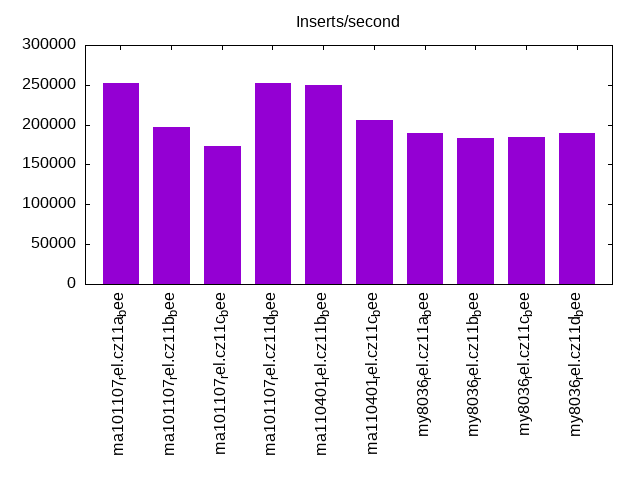
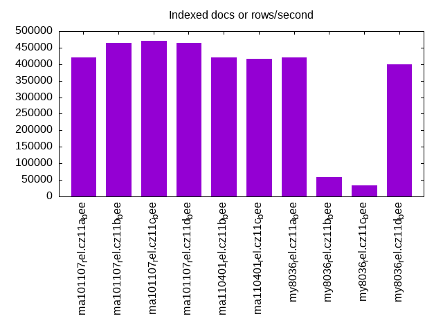
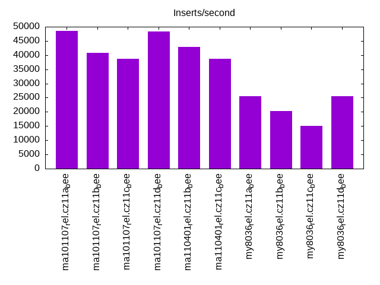
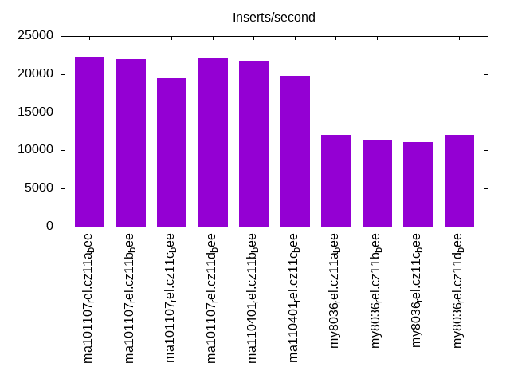
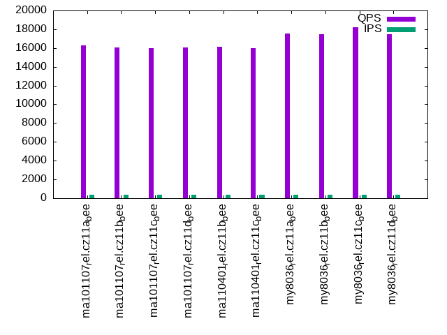
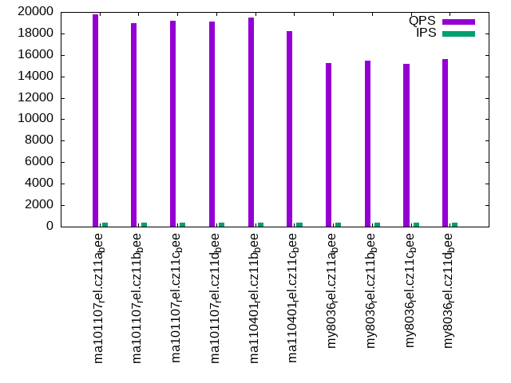
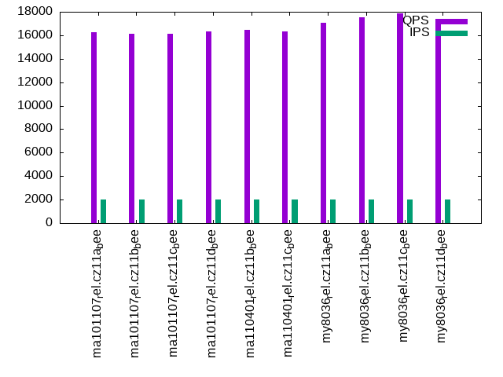
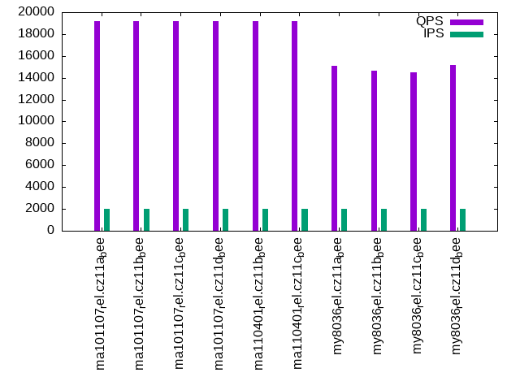
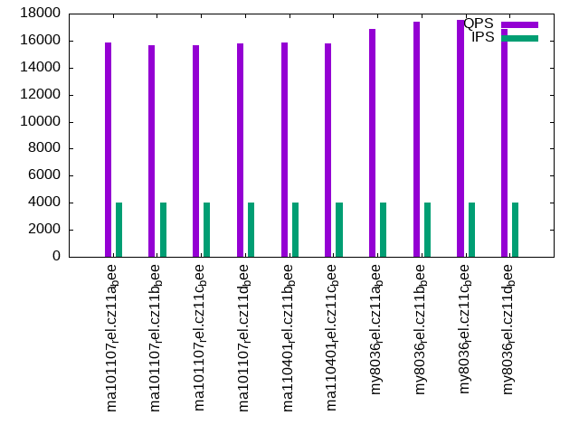
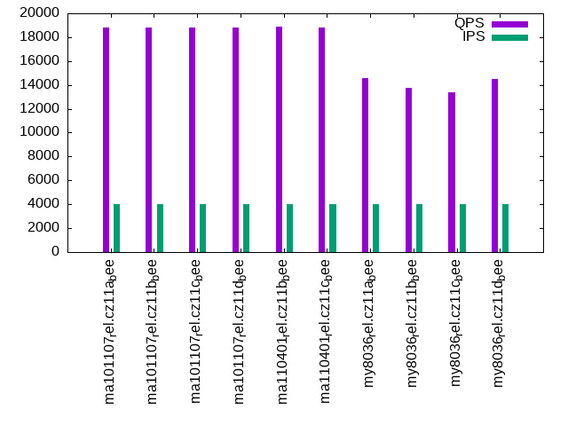

This is a report for the insert benchmark with 32M docs and 4 client(s). It is generated by scripts (bash, awk, sed) and Tufte might not be impressed. An overview of the insert benchmark is here and a short update is here. Below, by DBMS, I mean DBMS+version.config. An example is my8020.c10b40 where my means MySQL, 8020 is version 8.0.20 and c10b40 is the name for the configuration file.
The test server has 8 AMD cores, 16G RAM and an NVMe SSD. It is described here as the Beelink. The benchmark was run with 1 client and there were 1 or 3 connections per client (1 for queries or inserts without rate limits, 1+1 for rate limited inserts+deletes). It uses 1 table. It loads 30M rows per table without secondary indexes, creates 3 secondary indexes per table, then inserts 40m+10m rows per table with a delete per insert to avoid growing the table. It then does 6 read+write tests for 1800s each that do queries as fast as possible with 100,100,500,500,1000,1000 inserts/s and the same for deletes/s per client concurrent with the queries. The database is cached in memory. Clients and the DBMS share one server. The per-database configs are in the per-database subdirectories here.
The tested DBMS are:
The numbers are inserts/s for l.i0, l.i1 and l.i2, indexed docs (or rows) /s for l.x and queries/s for qr100, qp100 thru qr1000, qp1000" The values are the average rate over the entire test for inserts (IPS) and queries (QPS). The range of values for IPS and QPS is split into 3 parts: bottom 25%, middle 50%, top 25%. Values in the bottom 25% have a red background, values in the top 25% have a green background and values in the middle have no color. A gray background is used for values that can be ignored because the DBMS did not sustain the target insert rate. Red backgrounds are not used when the minimum value is within 80% of the max value.
| dbms | l.i0 | l.x | l.i1 | l.i2 | qr100 | qp100 | qr500 | qp500 | qr1000 | qp1000 |
|---|---|---|---|---|---|---|---|---|---|---|
| ma101107_rel.cz11a_bee | 251968 | 421054 | 48558 | 22222 | 16259 | 19804 | 16269 | 19191 | 15856 | 18791 |
| ma101107_rel.cz11b_bee | 197531 | 463770 | 40879 | 21918 | 16028 | 18924 | 16138 | 19189 | 15676 | 18808 |
| ma101107_rel.cz11c_bee | 172973 | 470590 | 38750 | 19465 | 15989 | 19178 | 16099 | 19213 | 15638 | 18826 |
| ma101107_rel.cz11d_bee | 251968 | 463770 | 48324 | 22112 | 16092 | 19075 | 16294 | 19208 | 15793 | 18780 |
| ma110401_rel.cz11b_bee | 250000 | 421054 | 42941 | 21751 | 16142 | 19489 | 16469 | 19158 | 15856 | 18863 |
| ma110401_rel.cz11c_bee | 206452 | 415586 | 38647 | 19812 | 15965 | 18185 | 16356 | 19168 | 15816 | 18778 |
| my8036_rel.cz11a_bee | 189349 | 421054 | 25429 | 12001 | 17519 | 15251 | 17092 | 15105 | 16872 | 14562 |
| my8036_rel.cz11b_bee | 182857 | 58608 | 20377 | 11419 | 17494 | 15441 | 17524 | 14684 | 17422 | 13780 |
| my8036_rel.cz11c_bee | 184971 | 34115 | 14981 | 11096 | 18224 | 15200 | 17884 | 14462 | 17538 | 13360 |
| my8036_rel.cz11d_bee | 189349 | 400001 | 25584 | 12023 | 17496 | 15584 | 17152 | 15134 | 16875 | 14476 |
This table has relative throughput, throughput for the DBMS relative to the DBMS in the first line, using the absolute throughput from the previous table. Values less than 0.95 have a yellow background. Values greater than 1.05 have a blue background.
| dbms | l.i0 | l.x | l.i1 | l.i2 | qr100 | qp100 | qr500 | qp500 | qr1000 | qp1000 |
|---|---|---|---|---|---|---|---|---|---|---|
| ma101107_rel.cz11a_bee | 1.00 | 1.00 | 1.00 | 1.00 | 1.00 | 1.00 | 1.00 | 1.00 | 1.00 | 1.00 |
| ma101107_rel.cz11b_bee | 0.78 | 1.10 | 0.84 | 0.99 | 0.99 | 0.96 | 0.99 | 1.00 | 0.99 | 1.00 |
| ma101107_rel.cz11c_bee | 0.69 | 1.12 | 0.80 | 0.88 | 0.98 | 0.97 | 0.99 | 1.00 | 0.99 | 1.00 |
| ma101107_rel.cz11d_bee | 1.00 | 1.10 | 1.00 | 1.00 | 0.99 | 0.96 | 1.00 | 1.00 | 1.00 | 1.00 |
| ma110401_rel.cz11b_bee | 0.99 | 1.00 | 0.88 | 0.98 | 0.99 | 0.98 | 1.01 | 1.00 | 1.00 | 1.00 |
| ma110401_rel.cz11c_bee | 0.82 | 0.99 | 0.80 | 0.89 | 0.98 | 0.92 | 1.01 | 1.00 | 1.00 | 1.00 |
| my8036_rel.cz11a_bee | 0.75 | 1.00 | 0.52 | 0.54 | 1.08 | 0.77 | 1.05 | 0.79 | 1.06 | 0.77 |
| my8036_rel.cz11b_bee | 0.73 | 0.14 | 0.42 | 0.51 | 1.08 | 0.78 | 1.08 | 0.77 | 1.10 | 0.73 |
| my8036_rel.cz11c_bee | 0.73 | 0.08 | 0.31 | 0.50 | 1.12 | 0.77 | 1.10 | 0.75 | 1.11 | 0.71 |
| my8036_rel.cz11d_bee | 0.75 | 0.95 | 0.53 | 0.54 | 1.08 | 0.79 | 1.05 | 0.79 | 1.06 | 0.77 |
This lists the average rate of inserts/s for the tests that do inserts concurrent with queries. For such tests the query rate is listed in the table above. The read+write tests are setup so that the insert rate should match the target rate every second. Cells that are not at least 95% of the target have a red background to indicate a failure to satisfy the target.
| dbms | qr100.L1 | qp100.L2 | qr500.L3 | qp500.L4 | qr1000.L5 | qp1000.L6 |
|---|---|---|---|---|---|---|
| ma101107_rel.cz11a_bee | 399 | 399 | 1993 | 1994 | 3989 | 3989 |
| ma101107_rel.cz11b_bee | 399 | 399 | 1994 | 1993 | 3989 | 3989 |
| ma101107_rel.cz11c_bee | 399 | 399 | 1993 | 1994 | 3989 | 3989 |
| ma101107_rel.cz11d_bee | 399 | 399 | 1994 | 1994 | 3989 | 3989 |
| ma110401_rel.cz11b_bee | 399 | 399 | 1993 | 1994 | 3989 | 3989 |
| ma110401_rel.cz11c_bee | 399 | 399 | 1994 | 1994 | 3989 | 3989 |
| my8036_rel.cz11a_bee | 399 | 399 | 1993 | 1993 | 3989 | 3989 |
| my8036_rel.cz11b_bee | 399 | 399 | 1994 | 1994 | 3987 | 3989 |
| my8036_rel.cz11c_bee | 399 | 399 | 1994 | 1994 | 3989 | 3989 |
| my8036_rel.cz11d_bee | 399 | 399 | 1994 | 1994 | 3989 | 3989 |
| target | 400 | 400 | 2000 | 2000 | 4000 | 4000 |
l.i0: load without secondary indexes. Graphs for performance per 1-second interval are here.
Average throughput:
Insert response time histogram: each cell has the percentage of responses that take <= the time in the header and max is the max response time in seconds. For the max column values in the top 25% of the range have a red background and in the bottom 25% of the range have a green background. The red background is not used when the min value is within 80% of the max value.
| dbms | 256us | 1ms | 4ms | 16ms | 64ms | 256ms | 1s | 4s | 16s | gt | max |
|---|---|---|---|---|---|---|---|---|---|---|---|
| ma101107_rel.cz11a_bee | 3.082 | 94.691 | 2.171 | 0.037 | 0.019 | 0.196 | |||||
| ma101107_rel.cz11b_bee | 2.473 | 95.289 | 2.143 | 0.075 | 0.017 | 0.001 | 0.001 | 19.505 | |||
| ma101107_rel.cz11c_bee | 2.562 | 95.150 | 2.202 | 0.065 | 0.017 | 0.001 | 0.001 | 0.001 | 56.292 | ||
| ma101107_rel.cz11d_bee | 2.832 | 94.928 | 2.173 | 0.048 | 0.019 | 0.191 | |||||
| ma110401_rel.cz11b_bee | 2.108 | 95.707 | 2.125 | 0.040 | 0.019 | 0.200 | |||||
| ma110401_rel.cz11c_bee | 1.565 | 96.262 | 2.029 | 0.121 | 0.018 | 0.001 | 0.004 | 11.218 | |||
| my8036_rel.cz11a_bee | 99.246 | 0.613 | 0.130 | 0.012 | 0.151 | ||||||
| my8036_rel.cz11b_bee | 98.876 | 0.985 | 0.105 | 0.034 | 0.165 | ||||||
| my8036_rel.cz11c_bee | 98.977 | 0.861 | 0.146 | 0.017 | 0.175 | ||||||
| my8036_rel.cz11d_bee | 99.229 | 0.645 | 0.115 | 0.011 | 0.157 |
Performance metrics for the DBMS listed above. Some are normalized by throughput, others are not. Legend for results is here.
ips qps rps rmbps wps wmbps rpq rkbpq wpi wkbpi csps cpups cspq cpupq dbgb1 dbgb2 rss maxop p50 p99 tag 251968 0 0 0.0 825.8 65.9 0.000 0.000 0.003 0.268 30027 73.1 0.119 23 2.1 18.0 2.3 0.196 70388 54159 ma101107_rel.cz11a_bee 197531 0 0 0.0 676.1 51.6 0.000 0.000 0.003 0.267 24320 58.4 0.123 24 2.1 18.0 2.3 19.505 68226 0 ma101107_rel.cz11b_bee 172973 0 0 0.0 200.7 45.5 0.000 0.000 0.001 0.269 21849 51.6 0.126 24 2.1 18.0 2.4 56.292 66428 0 ma101107_rel.cz11c_bee 251968 0 0 0.0 825.0 65.8 0.000 0.000 0.003 0.267 30437 73.1 0.121 23 2.1 18.0 2.3 0.191 69924 54141 ma101107_rel.cz11d_bee 250000 0 0 0.0 831.5 65.9 0.000 0.000 0.003 0.270 30993 73.2 0.124 23 2.1 18.0 2.3 0.200 69724 50046 ma110401_rel.cz11b_bee 206452 0 0 0.0 178.6 54.1 0.000 0.000 0.001 0.268 25945 61.2 0.126 24 2.1 18.0 2.4 11.218 68326 0 ma110401_rel.cz11c_bee 189349 0 0 0.0 783.5 62.1 0.000 0.000 0.004 0.336 22535 70.7 0.119 30 2.1 17.7 3.0 0.151 51344 41255 my8036_rel.cz11a_bee 182857 0 0 0.0 913.5 59.1 0.000 0.000 0.005 0.331 21225 69.8 0.116 31 2.1 17.7 3.0 0.165 50447 36061 my8036_rel.cz11b_bee 184971 0 0 0.0 586.7 56.1 0.000 0.000 0.003 0.311 20793 69.9 0.112 30 2.1 17.7 3.0 0.175 50745 34563 my8036_rel.cz11c_bee 189349 0 0 0.0 785.0 62.2 0.000 0.000 0.004 0.336 22374 71.0 0.118 30 2.1 17.7 3.0 0.157 51644 43652 my8036_rel.cz11d_bee
l.x: create secondary indexes.
Average throughput:
Performance metrics for the DBMS listed above. Some are normalized by throughput, others are not. Legend for results is here.
ips qps rps rmbps wps wmbps rpq rkbpq wpi wkbpi csps cpups cspq cpupq dbgb1 dbgb2 rss maxop p50 p99 tag 421054 0 0 0.0 2409.0 307.4 0.000 0.000 0.006 0.748 8497 41.3 0.020 8 4.8 20.6 4.4 0.002 NA NA ma101107_rel.cz11a_bee 463770 0 0 0.0 2475.2 329.4 0.000 0.000 0.005 0.727 8168 44.6 0.018 8 4.8 20.6 4.6 0.002 NA NA ma101107_rel.cz11b_bee 470590 0 0 0.0 832.6 347.9 0.000 0.000 0.002 0.757 8430 44.5 0.018 8 4.8 20.6 4.5 0.002 NA NA ma101107_rel.cz11c_bee 463770 0 0 0.0 2466.4 347.0 0.000 0.000 0.005 0.766 8053 44.1 0.017 8 4.8 20.6 4.6 0.002 NA NA ma101107_rel.cz11d_bee 421054 0 0 0.0 2302.8 305.9 0.000 0.000 0.005 0.744 7891 41.8 0.019 8 4.8 20.6 4.3 0.002 NA NA ma110401_rel.cz11b_bee 415586 0 0 0.0 726.8 304.7 0.000 0.000 0.002 0.751 7872 41.6 0.019 8 4.8 20.6 4.3 0.002 NA NA ma110401_rel.cz11c_bee 421054 0 2186 136.2 8559.0 427.2 0.005 0.331 0.020 1.039 25790 89.3 0.061 17 4.9 20.4 3.9 0.004 NA NA my8036_rel.cz11a_bee 58608 0 301 18.8 1604.5 61.8 0.005 0.328 0.027 1.080 13149 20.6 0.224 28 4.9 20.4 5.7 0.009 NA NA my8036_rel.cz11b_bee 34115 0 175 10.9 1091.6 36.7 0.005 0.328 0.032 1.103 12002 15.2 0.352 36 4.9 20.4 5.7 0.006 NA NA my8036_rel.cz11c_bee 400001 0 2055 127.9 8285.8 405.1 0.005 0.327 0.021 1.037 24713 89.4 0.062 18 4.9 20.4 3.4 0.007 NA NA my8036_rel.cz11d_bee
l.i1: continue load after secondary indexes created with 50 inserts per transaction. Graphs for performance per 1-second interval are here.
Average throughput:
Insert response time histogram: each cell has the percentage of responses that take <= the time in the header and max is the max response time in seconds. For the max column values in the top 25% of the range have a red background and in the bottom 25% of the range have a green background. The red background is not used when the min value is within 80% of the max value.
| dbms | 256us | 1ms | 4ms | 16ms | 64ms | 256ms | 1s | 4s | 16s | gt | max |
|---|---|---|---|---|---|---|---|---|---|---|---|
| ma101107_rel.cz11a_bee | 63.882 | 35.728 | 0.380 | 0.010 | nonzero | 0.294 | |||||
| ma101107_rel.cz11b_bee | 62.906 | 33.202 | 3.859 | 0.032 | 0.001 | 0.515 | |||||
| ma101107_rel.cz11c_bee | 80.939 | 15.100 | 3.350 | 0.537 | 0.074 | nonzero | 1.143 | ||||
| ma101107_rel.cz11d_bee | 63.224 | 36.385 | 0.381 | 0.009 | nonzero | 0.345 | |||||
| ma110401_rel.cz11b_bee | 65.331 | 31.546 | 3.101 | 0.022 | nonzero | 0.441 | |||||
| ma110401_rel.cz11c_bee | 82.573 | 13.304 | 3.484 | 0.565 | 0.073 | nonzero | 1.195 | ||||
| my8036_rel.cz11a_bee | 55.537 | 40.393 | 0.927 | 3.142 | 0.255 | ||||||
| my8036_rel.cz11b_bee | 57.684 | 37.090 | 1.973 | 3.094 | 0.095 | 0.061 | 0.001 | 0.001 | 30.175 | ||
| my8036_rel.cz11c_bee | 61.403 | 32.586 | 2.305 | 2.984 | 0.594 | 0.128 | 0.001 | 52.888 | |||
| my8036_rel.cz11d_bee | 55.878 | 40.169 | 0.821 | 3.132 | 0.227 |
Delete response time histogram: each cell has the percentage of responses that take <= the time in the header and max is the max response time in seconds. For the max column values in the top 25% of the range have a red background and in the bottom 25% of the range have a green background. The red background is not used when the min value is within 80% of the max value.
| dbms | 256us | 1ms | 4ms | 16ms | 64ms | 256ms | 1s | 4s | 16s | gt | max |
|---|---|---|---|---|---|---|---|---|---|---|---|
| ma101107_rel.cz11a_bee | 77.259 | 22.493 | 0.240 | 0.008 | nonzero | 0.293 | |||||
| ma101107_rel.cz11b_bee | 76.929 | 19.992 | 3.054 | 0.024 | nonzero | 0.352 | |||||
| ma101107_rel.cz11c_bee | nonzero | 86.025 | 10.400 | 3.020 | 0.480 | 0.074 | 0.911 | ||||
| ma101107_rel.cz11d_bee | 77.090 | 22.669 | 0.233 | 0.008 | nonzero | 0.339 | |||||
| ma110401_rel.cz11b_bee | 75.804 | 21.729 | 2.449 | 0.017 | nonzero | 0.324 | |||||
| ma110401_rel.cz11c_bee | nonzero | 86.591 | 9.631 | 3.196 | 0.510 | 0.072 | 0.910 | ||||
| my8036_rel.cz11a_bee | 63.931 | 32.348 | 0.726 | 2.995 | 0.216 | ||||||
| my8036_rel.cz11b_bee | 67.395 | 28.024 | 1.552 | 2.885 | 0.086 | 0.056 | 0.001 | 0.001 | 30.167 | ||
| my8036_rel.cz11c_bee | 70.947 | 23.831 | 1.825 | 2.740 | 0.542 | 0.114 | nonzero | 0.001 | 52.887 | ||
| my8036_rel.cz11d_bee | 64.394 | 31.988 | 0.642 | 2.976 | 0.214 |
Performance metrics for the DBMS listed above. Some are normalized by throughput, others are not. Legend for results is here.
ips qps rps rmbps wps wmbps rpq rkbpq wpi wkbpi csps cpups cspq cpupq dbgb1 dbgb2 rss maxop p50 p99 tag 48558 0 2074 8.1 5851.2 215.6 0.043 0.171 0.120 4.546 75160 75.3 1.548 124 6.7 22.5 6.6 0.294 12241 8239 ma101107_rel.cz11a_bee 40879 0 1767 6.9 5256.3 184.9 0.043 0.173 0.129 4.632 69802 66.4 1.708 130 6.7 22.9 6.6 0.515 10139 5394 ma101107_rel.cz11b_bee 38750 0 1430 5.6 3585.7 126.2 0.037 0.148 0.093 3.336 40856 59.5 1.054 123 8.5 25.8 10.2 1.143 10639 150 ma101107_rel.cz11c_bee 48324 0 2075 8.1 5865.6 215.7 0.043 0.172 0.121 4.570 75476 75.5 1.562 125 6.6 22.4 6.6 0.345 12191 7991 ma101107_rel.cz11d_bee 42941 0 1836 7.2 5427.5 192.4 0.043 0.171 0.126 4.589 70644 67.5 1.645 126 6.6 22.5 6.5 0.441 10788 6443 ma110401_rel.cz11b_bee 38647 0 1458 5.7 3473.1 123.6 0.038 0.151 0.090 3.274 39703 58.4 1.027 121 8.6 25.8 10.1 1.195 10039 200 ma110401_rel.cz11c_bee 25429 0 25 0.4 3283.1 120.2 0.001 0.015 0.129 4.840 21116 54.5 0.830 171 6.4 22.0 7.5 0.255 6341 3645 my8036_rel.cz11a_bee 20377 0 20 0.3 1119.5 50.7 0.001 0.015 0.055 2.546 16852 45.9 0.827 180 6.4 22.0 7.6 30.175 5596 0 my8036_rel.cz11b_bee 14981 0 3 0.1 880.9 36.8 0.000 0.009 0.059 2.517 17657 37.1 1.179 198 6.4 22.0 6.8 52.888 3496 0 my8036_rel.cz11c_bee 25584 0 25 0.4 3301.0 121.0 0.001 0.015 0.129 4.842 21217 54.5 0.829 170 6.4 22.0 7.6 0.227 6343 3499 my8036_rel.cz11d_bee
l.i2: continue load after secondary indexes created with 5 inserts per transaction. Graphs for performance per 1-second interval are here.
Average throughput:
Insert response time histogram: each cell has the percentage of responses that take <= the time in the header and max is the max response time in seconds. For the max column values in the top 25% of the range have a red background and in the bottom 25% of the range have a green background. The red background is not used when the min value is within 80% of the max value.
| dbms | 256us | 1ms | 4ms | 16ms | 64ms | 256ms | 1s | 4s | 16s | gt | max |
|---|---|---|---|---|---|---|---|---|---|---|---|
| ma101107_rel.cz11a_bee | 0.011 | 82.903 | 15.979 | 1.102 | 0.004 | 0.001 | 0.145 | ||||
| ma101107_rel.cz11b_bee | 0.072 | 83.677 | 14.958 | 1.227 | 0.065 | 0.001 | 0.237 | ||||
| ma101107_rel.cz11c_bee | 0.348 | 85.303 | 12.647 | 1.099 | 0.590 | 0.013 | nonzero | 0.283 | |||
| ma101107_rel.cz11d_bee | 0.008 | 82.505 | 16.379 | 1.103 | 0.003 | 0.001 | 0.109 | ||||
| ma110401_rel.cz11b_bee | 0.141 | 84.496 | 14.001 | 1.244 | 0.117 | 0.002 | 0.138 | ||||
| ma110401_rel.cz11c_bee | 0.274 | 84.559 | 13.507 | 1.185 | 0.465 | 0.010 | 0.228 | ||||
| my8036_rel.cz11a_bee | 64.766 | 33.169 | 1.550 | 0.016 | 0.498 | 0.133 | |||||
| my8036_rel.cz11b_bee | 62.915 | 34.569 | 1.898 | 0.138 | 0.479 | 0.169 | |||||
| my8036_rel.cz11c_bee | 67.131 | 30.299 | 1.694 | 0.398 | 0.477 | nonzero | 0.001 | nonzero | nonzero | 21.851 | |
| my8036_rel.cz11d_bee | 64.799 | 33.156 | 1.530 | 0.016 | 0.500 | 0.130 |
Delete response time histogram: each cell has the percentage of responses that take <= the time in the header and max is the max response time in seconds. For the max column values in the top 25% of the range have a red background and in the bottom 25% of the range have a green background. The red background is not used when the min value is within 80% of the max value.
| dbms | 256us | 1ms | 4ms | 16ms | 64ms | 256ms | 1s | 4s | 16s | gt | max |
|---|---|---|---|---|---|---|---|---|---|---|---|
| ma101107_rel.cz11a_bee | 0.026 | 83.191 | 15.635 | 1.143 | 0.004 | 0.001 | 0.144 | ||||
| ma101107_rel.cz11b_bee | 0.125 | 83.946 | 14.618 | 1.252 | 0.057 | 0.001 | 0.220 | ||||
| ma101107_rel.cz11c_bee | 0.573 | 85.326 | 12.461 | 1.103 | 0.525 | 0.012 | nonzero | 0.285 | |||
| ma101107_rel.cz11d_bee | 0.027 | 82.897 | 15.929 | 1.142 | 0.003 | 0.001 | 0.110 | ||||
| ma110401_rel.cz11b_bee | 0.160 | 84.532 | 13.950 | 1.252 | 0.105 | 0.002 | 0.127 | ||||
| ma110401_rel.cz11c_bee | 0.287 | 84.644 | 13.452 | 1.181 | 0.426 | 0.009 | 0.226 | ||||
| my8036_rel.cz11a_bee | 65.220 | 32.713 | 1.555 | 0.015 | 0.498 | 0.132 | |||||
| my8036_rel.cz11b_bee | 63.406 | 34.079 | 1.901 | 0.136 | 0.478 | 0.174 | |||||
| my8036_rel.cz11c_bee | 67.628 | 29.809 | 1.694 | 0.395 | 0.474 | nonzero | 0.001 | nonzero | nonzero | 21.850 | |
| my8036_rel.cz11d_bee | 65.279 | 32.671 | 1.536 | 0.016 | 0.499 | 0.138 |
Performance metrics for the DBMS listed above. Some are normalized by throughput, others are not. Legend for results is here.
ips qps rps rmbps wps wmbps rpq rkbpq wpi wkbpi csps cpups cspq cpupq dbgb1 dbgb2 rss maxop p50 p99 tag 22222 0 3118 12.2 2641.7 99.3 0.140 0.561 0.119 4.576 93789 73.6 4.221 265 6.7 22.5 6.5 0.145 5572 5049 ma101107_rel.cz11a_bee 21918 0 3078 12.0 2678.2 97.5 0.140 0.562 0.122 4.554 93517 72.6 4.267 265 6.7 22.9 6.5 0.237 5529 4215 ma101107_rel.cz11b_bee 19465 0 2765 10.8 2411.0 89.6 0.142 0.568 0.124 4.715 81767 65.7 4.201 270 8.5 25.8 10.5 0.283 5226 180 ma101107_rel.cz11c_bee 22112 0 3104 12.1 2633.4 98.9 0.140 0.561 0.119 4.582 93581 73.7 4.232 267 6.6 22.4 6.5 0.109 5546 4900 ma101107_rel.cz11d_bee 21751 0 3051 11.9 2661.6 96.8 0.140 0.561 0.122 4.556 92713 71.9 4.263 264 6.6 22.5 6.5 0.138 5507 4581 ma110401_rel.cz11b_bee 19812 0 2820 11.0 2526.7 93.7 0.142 0.569 0.128 4.841 83058 67.4 4.192 272 8.6 25.8 10.4 0.228 5199 170 ma110401_rel.cz11c_bee 12001 0 0 0.0 1835.3 63.6 0.000 0.000 0.153 5.429 45020 55.4 3.751 369 6.4 22.0 7.6 0.133 3001 1869 my8036_rel.cz11a_bee 11419 0 0 0.0 769.6 30.4 0.000 0.000 0.067 2.724 40710 53.3 3.565 373 6.4 22.0 7.6 0.169 2852 1798 my8036_rel.cz11b_bee 11096 0 0 0.0 656.6 27.1 0.000 0.000 0.059 2.501 42667 55.3 3.845 399 6.4 22.0 6.8 21.851 2782 644 my8036_rel.cz11c_bee 12023 0 0 0.0 1776.6 62.2 0.000 0.000 0.148 5.297 44918 55.4 3.736 369 6.4 22.0 7.6 0.130 2986 1837 my8036_rel.cz11d_bee
qr100.L1: range queries with 100 insert/s per client. Graphs for performance per 1-second interval are here.
Average throughput:
Query response time histogram: each cell has the percentage of responses that take <= the time in the header and max is the max response time in seconds. For max values in the top 25% of the range have a red background and in the bottom 25% of the range have a green background. The red background is not used when the min value is within 80% of the max value.
| dbms | 256us | 1ms | 4ms | 16ms | 64ms | 256ms | 1s | 4s | 16s | gt | max |
|---|---|---|---|---|---|---|---|---|---|---|---|
| ma101107_rel.cz11a_bee | 70.969 | 29.013 | 0.016 | 0.002 | 0.008 | ||||||
| ma101107_rel.cz11b_bee | 68.939 | 31.044 | 0.016 | 0.002 | 0.010 | ||||||
| ma101107_rel.cz11c_bee | 68.761 | 31.221 | 0.016 | 0.001 | 0.011 | ||||||
| ma101107_rel.cz11d_bee | 69.361 | 30.623 | 0.015 | 0.001 | 0.012 | ||||||
| ma110401_rel.cz11b_bee | 70.543 | 29.441 | 0.015 | 0.001 | 0.009 | ||||||
| ma110401_rel.cz11c_bee | 68.524 | 31.460 | 0.015 | 0.002 | 0.015 | ||||||
| my8036_rel.cz11a_bee | 78.884 | 21.108 | 0.006 | 0.001 | 0.012 | ||||||
| my8036_rel.cz11b_bee | 78.578 | 21.413 | 0.007 | 0.002 | nonzero | 0.045 | |||||
| my8036_rel.cz11c_bee | 83.595 | 16.395 | 0.007 | 0.003 | nonzero | nonzero | 0.145 | ||||
| my8036_rel.cz11d_bee | 78.578 | 21.414 | 0.007 | 0.001 | 0.013 |
Insert response time histogram: each cell has the percentage of responses that take <= the time in the header and max is the max response time in seconds. For max values in the top 25% of the range have a red background and in the bottom 25% of the range have a green background. The red background is not used when the min value is within 80% of the max value.
| dbms | 256us | 1ms | 4ms | 16ms | 64ms | 256ms | 1s | 4s | 16s | gt | max |
|---|---|---|---|---|---|---|---|---|---|---|---|
| ma101107_rel.cz11a_bee | 57.799 | 42.194 | 0.007 | 0.019 | |||||||
| ma101107_rel.cz11b_bee | 87.910 | 12.090 | 0.012 | ||||||||
| ma101107_rel.cz11c_bee | 74.403 | 25.597 | 0.016 | ||||||||
| ma101107_rel.cz11d_bee | 75.174 | 24.826 | 0.014 | ||||||||
| ma110401_rel.cz11b_bee | 70.424 | 29.563 | 0.014 | 0.017 | |||||||
| ma110401_rel.cz11c_bee | 79.639 | 20.361 | 0.015 | ||||||||
| my8036_rel.cz11a_bee | 96.826 | 3.160 | 0.014 | 0.026 | |||||||
| my8036_rel.cz11b_bee | 94.625 | 5.083 | 0.215 | 0.076 | 0.102 | ||||||
| my8036_rel.cz11c_bee | 93.875 | 5.431 | 0.479 | 0.215 | 0.204 | ||||||
| my8036_rel.cz11d_bee | 92.882 | 7.062 | 0.007 | 0.049 | 0.104 |
Delete response time histogram: each cell has the percentage of responses that take <= the time in the header and max is the max response time in seconds. For max values in the top 25% of the range have a red background and in the bottom 25% of the range have a green background. The red background is not used when the min value is within 80% of the max value.
| dbms | 256us | 1ms | 4ms | 16ms | 64ms | 256ms | 1s | 4s | 16s | gt | max |
|---|---|---|---|---|---|---|---|---|---|---|---|
| ma101107_rel.cz11a_bee | 59.639 | 40.347 | 0.014 | 0.019 | |||||||
| ma101107_rel.cz11b_bee | 87.910 | 12.090 | 0.013 | ||||||||
| ma101107_rel.cz11c_bee | 74.785 | 25.215 | 0.015 | ||||||||
| ma101107_rel.cz11d_bee | 75.528 | 24.472 | 0.014 | ||||||||
| ma110401_rel.cz11b_bee | 71.264 | 28.736 | 0.015 | ||||||||
| ma110401_rel.cz11c_bee | 80.188 | 19.812 | 0.014 | ||||||||
| my8036_rel.cz11a_bee | 96.993 | 2.993 | 0.014 | 0.037 | |||||||
| my8036_rel.cz11b_bee | 95.312 | 4.472 | 0.125 | 0.090 | 0.104 | ||||||
| my8036_rel.cz11c_bee | 95.062 | 4.326 | 0.431 | 0.181 | 0.164 | ||||||
| my8036_rel.cz11d_bee | 94.625 | 5.333 | 0.007 | 0.035 | 0.103 |
Performance metrics for the DBMS listed above. Some are normalized by throughput, others are not. Legend for results is here.
ips qps rps rmbps wps wmbps rpq rkbpq wpi wkbpi csps cpups cspq cpupq dbgb1 dbgb2 rss maxop p50 p99 tag 399 16259 10 0.0 9.3 0.6 0.001 0.003 0.023 1.645 61983 50.9 3.812 250 6.7 22.5 6.5 0.008 4029 3532 ma101107_rel.cz11a_bee 399 16028 14 0.1 8.2 0.6 0.001 0.003 0.021 1.524 61135 50.9 3.814 254 6.7 22.9 6.5 0.010 3996 3500 ma101107_rel.cz11b_bee 399 15989 12 0.0 2.2 0.4 0.001 0.003 0.006 1.131 60944 50.9 3.812 255 8.5 25.8 9.7 0.011 3980 3484 ma101107_rel.cz11c_bee 399 16092 12 0.0 19.7 0.9 0.001 0.003 0.049 2.406 61430 51.0 3.818 254 6.6 22.4 6.5 0.012 4012 3500 ma101107_rel.cz11d_bee 399 16142 11 0.0 13.7 0.8 0.001 0.003 0.034 1.933 61560 51.0 3.814 253 6.6 22.5 6.5 0.009 4013 3564 ma110401_rel.cz11b_bee 399 15965 12 0.0 7.5 0.6 0.001 0.003 0.019 1.538 60867 50.9 3.813 255 8.6 25.8 9.7 0.015 3947 3468 ma110401_rel.cz11c_bee 399 17519 0 0.0 528.2 13.6 0.000 0.000 1.324 34.977 68313 51.1 3.899 233 6.4 22.0 7.6 0.012 4331 3612 my8036_rel.cz11a_bee 399 17494 0 0.0 212.0 4.1 0.000 0.000 0.532 10.529 67566 51.4 3.862 235 6.4 22.0 7.6 0.045 4459 3534 my8036_rel.cz11b_bee 399 18224 0 0.0 247.4 4.2 0.000 0.000 0.620 10.860 69987 52.4 3.840 230 6.4 22.0 6.9 0.145 4613 3676 my8036_rel.cz11c_bee 399 17496 0 0.0 485.1 12.5 0.000 0.000 1.216 32.214 68145 51.2 3.895 234 6.4 22.0 7.6 0.013 4267 3548 my8036_rel.cz11d_bee
qp100.L2: point queries with 100 insert/s per client. Graphs for performance per 1-second interval are here.
Average throughput:
Query response time histogram: each cell has the percentage of responses that take <= the time in the header and max is the max response time in seconds. For max values in the top 25% of the range have a red background and in the bottom 25% of the range have a green background. The red background is not used when the min value is within 80% of the max value.
| dbms | 256us | 1ms | 4ms | 16ms | 64ms | 256ms | 1s | 4s | 16s | gt | max |
|---|---|---|---|---|---|---|---|---|---|---|---|
| ma101107_rel.cz11a_bee | 98.034 | 1.923 | 0.042 | 0.001 | 0.008 | ||||||
| ma101107_rel.cz11b_bee | 94.936 | 5.019 | 0.044 | 0.002 | 0.010 | ||||||
| ma101107_rel.cz11c_bee | 95.727 | 4.228 | 0.044 | 0.001 | 0.012 | ||||||
| ma101107_rel.cz11d_bee | 95.813 | 4.141 | 0.045 | 0.001 | 0.009 | ||||||
| ma110401_rel.cz11b_bee | 96.711 | 3.246 | 0.042 | 0.001 | 0.010 | ||||||
| ma110401_rel.cz11c_bee | 92.261 | 7.692 | 0.045 | 0.002 | 0.010 | ||||||
| my8036_rel.cz11a_bee | 80.253 | 19.730 | 0.014 | 0.003 | 0.010 | ||||||
| my8036_rel.cz11b_bee | 84.283 | 15.695 | 0.017 | 0.004 | 0.012 | ||||||
| my8036_rel.cz11c_bee | 78.259 | 21.720 | 0.016 | 0.005 | 0.015 | ||||||
| my8036_rel.cz11d_bee | 85.570 | 14.413 | 0.014 | 0.003 | 0.012 |
Insert response time histogram: each cell has the percentage of responses that take <= the time in the header and max is the max response time in seconds. For max values in the top 25% of the range have a red background and in the bottom 25% of the range have a green background. The red background is not used when the min value is within 80% of the max value.
| dbms | 256us | 1ms | 4ms | 16ms | 64ms | 256ms | 1s | 4s | 16s | gt | max |
|---|---|---|---|---|---|---|---|---|---|---|---|
| ma101107_rel.cz11a_bee | 81.306 | 18.694 | 0.015 | ||||||||
| ma101107_rel.cz11b_bee | 87.646 | 12.354 | 0.015 | ||||||||
| ma101107_rel.cz11c_bee | 75.514 | 24.486 | 0.015 | ||||||||
| ma101107_rel.cz11d_bee | 86.646 | 13.347 | 0.007 | 0.016 | |||||||
| ma110401_rel.cz11b_bee | 88.153 | 11.847 | 0.013 | ||||||||
| ma110401_rel.cz11c_bee | 78.000 | 22.000 | 0.015 | ||||||||
| my8036_rel.cz11a_bee | 96.236 | 3.681 | 0.021 | 0.062 | 0.106 | ||||||
| my8036_rel.cz11b_bee | 96.667 | 3.271 | 0.062 | 0.042 | |||||||
| my8036_rel.cz11c_bee | 95.493 | 4.174 | 0.264 | 0.069 | 0.123 | ||||||
| my8036_rel.cz11d_bee | 96.493 | 3.479 | 0.021 | 0.007 | 0.102 |
Delete response time histogram: each cell has the percentage of responses that take <= the time in the header and max is the max response time in seconds. For max values in the top 25% of the range have a red background and in the bottom 25% of the range have a green background. The red background is not used when the min value is within 80% of the max value.
| dbms | 256us | 1ms | 4ms | 16ms | 64ms | 256ms | 1s | 4s | 16s | gt | max |
|---|---|---|---|---|---|---|---|---|---|---|---|
| ma101107_rel.cz11a_bee | 81.500 | 18.500 | 0.014 | ||||||||
| ma101107_rel.cz11b_bee | 87.785 | 12.215 | 0.016 | ||||||||
| ma101107_rel.cz11c_bee | 75.826 | 24.167 | 0.007 | 0.017 | |||||||
| ma101107_rel.cz11d_bee | 86.625 | 13.375 | 0.015 | ||||||||
| ma110401_rel.cz11b_bee | 88.097 | 11.896 | 0.007 | 0.017 | |||||||
| ma110401_rel.cz11c_bee | 78.264 | 21.736 | 0.016 | ||||||||
| my8036_rel.cz11a_bee | 96.500 | 3.438 | 0.014 | 0.049 | 0.103 | ||||||
| my8036_rel.cz11b_bee | 96.389 | 3.542 | 0.069 | 0.048 | |||||||
| my8036_rel.cz11c_bee | 95.701 | 4.069 | 0.174 | 0.056 | 0.102 | ||||||
| my8036_rel.cz11d_bee | 96.458 | 3.528 | 0.007 | 0.007 | 0.102 |
Performance metrics for the DBMS listed above. Some are normalized by throughput, others are not. Legend for results is here.
ips qps rps rmbps wps wmbps rpq rkbpq wpi wkbpi csps cpups cspq cpupq dbgb1 dbgb2 rss maxop p50 p99 tag 399 19804 13 0.1 21.2 1.0 0.001 0.003 0.053 2.520 78848 51.0 3.981 206 6.7 22.5 6.5 0.008 4981 4509 ma101107_rel.cz11a_bee 399 18924 14 0.1 20.0 0.9 0.001 0.003 0.050 2.391 74496 50.7 3.937 214 6.7 22.9 6.6 0.010 4797 3948 ma101107_rel.cz11b_bee 399 19178 13 0.0 2.6 0.5 0.001 0.003 0.007 1.158 75669 50.7 3.946 211 8.5 25.8 9.7 0.012 4908 3916 ma101107_rel.cz11c_bee 399 19075 14 0.1 25.4 1.1 0.001 0.003 0.064 2.834 75405 50.7 3.953 213 6.6 22.4 6.5 0.009 4891 3964 ma101107_rel.cz11d_bee 399 19489 14 0.1 26.1 1.1 0.001 0.003 0.066 2.833 77240 50.7 3.963 208 6.6 22.5 6.5 0.010 5003 4014 ma110401_rel.cz11b_bee 399 18185 12 0.0 9.8 0.7 0.001 0.003 0.024 1.688 70867 50.4 3.897 222 8.6 25.8 9.7 0.010 4539 3853 ma110401_rel.cz11c_bee 399 15251 0 0.0 67.4 2.1 0.000 0.000 0.169 5.481 59346 50.3 3.891 264 6.4 22.1 7.6 0.010 3901 3356 my8036_rel.cz11a_bee 399 15441 0 0.0 150.2 3.3 0.000 0.000 0.377 8.443 61754 51.0 3.999 264 6.4 22.1 7.6 0.012 3900 3436 my8036_rel.cz11b_bee 399 15200 0 0.0 180.3 3.4 0.000 0.000 0.452 8.757 60092 51.8 3.953 273 6.4 22.1 6.9 0.015 3852 3372 my8036_rel.cz11c_bee 399 15584 0 0.0 71.9 2.2 0.000 0.000 0.180 5.760 61752 50.4 3.962 259 6.4 22.1 7.6 0.012 3944 3420 my8036_rel.cz11d_bee
qr500.L3: range queries with 500 insert/s per client. Graphs for performance per 1-second interval are here.
Average throughput:
Query response time histogram: each cell has the percentage of responses that take <= the time in the header and max is the max response time in seconds. For max values in the top 25% of the range have a red background and in the bottom 25% of the range have a green background. The red background is not used when the min value is within 80% of the max value.
| dbms | 256us | 1ms | 4ms | 16ms | 64ms | 256ms | 1s | 4s | 16s | gt | max |
|---|---|---|---|---|---|---|---|---|---|---|---|
| ma101107_rel.cz11a_bee | 72.673 | 27.227 | 0.088 | 0.012 | nonzero | 0.024 | |||||
| ma101107_rel.cz11b_bee | 71.593 | 28.304 | 0.087 | 0.016 | nonzero | 0.042 | |||||
| ma101107_rel.cz11c_bee | 71.673 | 28.212 | 0.095 | 0.018 | 0.002 | nonzero | 0.121 | ||||
| ma101107_rel.cz11d_bee | 72.381 | 27.521 | 0.087 | 0.011 | nonzero | 0.019 | |||||
| ma110401_rel.cz11b_bee | 74.076 | 25.833 | 0.079 | 0.012 | nonzero | 0.031 | |||||
| ma110401_rel.cz11c_bee | 72.966 | 26.942 | 0.081 | 0.011 | nonzero | nonzero | 0.073 | ||||
| my8036_rel.cz11a_bee | 77.985 | 21.983 | 0.021 | 0.011 | nonzero | 0.030 | |||||
| my8036_rel.cz11b_bee | 81.320 | 18.629 | 0.035 | 0.016 | 0.001 | nonzero | 0.093 | ||||
| my8036_rel.cz11c_bee | 85.556 | 14.390 | 0.034 | 0.019 | 0.001 | nonzero | 0.102 | ||||
| my8036_rel.cz11d_bee | 78.135 | 21.833 | 0.022 | 0.010 | nonzero | 0.041 |
Insert response time histogram: each cell has the percentage of responses that take <= the time in the header and max is the max response time in seconds. For max values in the top 25% of the range have a red background and in the bottom 25% of the range have a green background. The red background is not used when the min value is within 80% of the max value.
| dbms | 256us | 1ms | 4ms | 16ms | 64ms | 256ms | 1s | 4s | 16s | gt | max |
|---|---|---|---|---|---|---|---|---|---|---|---|
| ma101107_rel.cz11a_bee | 93.333 | 6.599 | 0.068 | 0.040 | |||||||
| ma101107_rel.cz11b_bee | 93.126 | 6.711 | 0.161 | 0.001 | 0.065 | ||||||
| ma101107_rel.cz11c_bee | 92.004 | 7.714 | 0.265 | 0.017 | 0.146 | ||||||
| ma101107_rel.cz11d_bee | 93.469 | 6.476 | 0.054 | 0.030 | |||||||
| ma110401_rel.cz11b_bee | 93.364 | 6.510 | 0.126 | 0.036 | |||||||
| ma110401_rel.cz11c_bee | 93.192 | 6.567 | 0.236 | 0.006 | 0.079 | ||||||
| my8036_rel.cz11a_bee | 86.285 | 12.310 | 1.051 | 0.354 | 0.131 | ||||||
| my8036_rel.cz11b_bee | 87.268 | 11.322 | 1.161 | 0.249 | 0.124 | ||||||
| my8036_rel.cz11c_bee | 81.035 | 15.851 | 2.506 | 0.608 | 0.166 | ||||||
| my8036_rel.cz11d_bee | 85.592 | 13.061 | 1.075 | 0.272 | 0.129 |
Delete response time histogram: each cell has the percentage of responses that take <= the time in the header and max is the max response time in seconds. For max values in the top 25% of the range have a red background and in the bottom 25% of the range have a green background. The red background is not used when the min value is within 80% of the max value.
| dbms | 256us | 1ms | 4ms | 16ms | 64ms | 256ms | 1s | 4s | 16s | gt | max |
|---|---|---|---|---|---|---|---|---|---|---|---|
| ma101107_rel.cz11a_bee | 95.182 | 4.783 | 0.035 | 0.040 | |||||||
| ma101107_rel.cz11b_bee | 95.106 | 4.814 | 0.081 | 0.039 | |||||||
| ma101107_rel.cz11c_bee | 94.540 | 5.317 | 0.139 | 0.004 | 0.134 | ||||||
| ma101107_rel.cz11d_bee | 95.265 | 4.715 | 0.019 | 0.029 | |||||||
| ma110401_rel.cz11b_bee | 95.031 | 4.897 | 0.072 | 0.035 | |||||||
| ma110401_rel.cz11c_bee | 94.910 | 4.967 | 0.122 | 0.001 | 0.071 | ||||||
| my8036_rel.cz11a_bee | 89.608 | 9.412 | 0.667 | 0.312 | 0.124 | ||||||
| my8036_rel.cz11b_bee | 90.022 | 8.812 | 0.935 | 0.231 | 0.117 | ||||||
| my8036_rel.cz11c_bee | 85.599 | 12.028 | 1.835 | 0.539 | 0.184 | ||||||
| my8036_rel.cz11d_bee | 89.040 | 10.035 | 0.676 | 0.249 | 0.126 |
Performance metrics for the DBMS listed above. Some are normalized by throughput, others are not. Legend for results is here.
ips qps rps rmbps wps wmbps rpq rkbpq wpi wkbpi csps cpups cspq cpupq dbgb1 dbgb2 rss maxop p50 p99 tag 1993 16269 72 0.3 240.5 8.7 0.004 0.018 0.121 4.455 62602 52.6 3.848 259 6.7 22.5 6.5 0.024 4044 3532 ma101107_rel.cz11a_bee 1994 16138 73 0.3 245.5 8.6 0.005 0.018 0.123 4.429 62149 52.5 3.851 260 6.7 22.9 6.6 0.042 4013 3468 ma101107_rel.cz11b_bee 1993 16099 73 0.3 260.1 9.4 0.005 0.018 0.130 4.817 61896 52.4 3.845 260 8.5 25.8 9.7 0.121 4012 3436 ma101107_rel.cz11c_bee 1994 16294 72 0.3 227.2 8.3 0.004 0.018 0.114 4.258 62675 52.7 3.846 259 6.6 22.4 6.5 0.019 4076 3516 ma101107_rel.cz11d_bee 1993 16469 73 0.3 236.5 8.4 0.004 0.018 0.119 4.293 63307 52.5 3.844 255 6.6 22.5 6.5 0.031 4093 3582 ma110401_rel.cz11b_bee 1994 16356 73 0.3 250.0 9.0 0.004 0.018 0.125 4.644 62742 52.6 3.836 257 8.6 25.8 9.7 0.073 4059 3516 ma110401_rel.cz11c_bee 1993 17092 0 0.0 421.4 13.0 0.000 0.000 0.211 6.662 65399 53.4 3.826 250 6.4 22.1 7.6 0.030 4315 3550 my8036_rel.cz11a_bee 1994 17524 0 0.0 508.0 12.0 0.000 0.000 0.255 6.146 67449 55.5 3.849 253 6.4 22.1 7.6 0.093 4475 3628 my8036_rel.cz11b_bee 1994 17884 0 0.0 585.3 12.0 0.000 0.000 0.293 6.155 69173 57.9 3.868 259 6.4 22.1 6.9 0.102 4573 3662 my8036_rel.cz11c_bee 1994 17152 0 0.0 414.4 12.8 0.000 0.000 0.208 6.549 65770 53.5 3.835 250 6.4 22.1 7.6 0.041 4331 3580 my8036_rel.cz11d_bee
qp500.L4: point queries with 500 insert/s per client. Graphs for performance per 1-second interval are here.
Average throughput:
Query response time histogram: each cell has the percentage of responses that take <= the time in the header and max is the max response time in seconds. For max values in the top 25% of the range have a red background and in the bottom 25% of the range have a green background. The red background is not used when the min value is within 80% of the max value.
| dbms | 256us | 1ms | 4ms | 16ms | 64ms | 256ms | 1s | 4s | 16s | gt | max |
|---|---|---|---|---|---|---|---|---|---|---|---|
| ma101107_rel.cz11a_bee | 96.132 | 3.759 | 0.099 | 0.010 | nonzero | 0.019 | |||||
| ma101107_rel.cz11b_bee | 95.938 | 3.943 | 0.108 | 0.012 | nonzero | 0.018 | |||||
| ma101107_rel.cz11c_bee | 96.086 | 3.794 | 0.108 | 0.012 | nonzero | 0.017 | |||||
| ma101107_rel.cz11d_bee | 96.113 | 3.766 | 0.110 | 0.011 | nonzero | 0.018 | |||||
| ma110401_rel.cz11b_bee | 95.904 | 3.983 | 0.100 | 0.013 | nonzero | 0.018 | |||||
| ma110401_rel.cz11c_bee | 95.820 | 4.067 | 0.102 | 0.012 | nonzero | 0.040 | |||||
| my8036_rel.cz11a_bee | 80.278 | 19.676 | 0.034 | 0.012 | nonzero | 0.028 | |||||
| my8036_rel.cz11b_bee | 73.325 | 26.608 | 0.047 | 0.020 | nonzero | 0.042 | |||||
| my8036_rel.cz11c_bee | 66.119 | 33.808 | 0.050 | 0.023 | 0.001 | 0.054 | |||||
| my8036_rel.cz11d_bee | 79.685 | 20.266 | 0.035 | 0.013 | 0.001 | 0.029 |
Insert response time histogram: each cell has the percentage of responses that take <= the time in the header and max is the max response time in seconds. For max values in the top 25% of the range have a red background and in the bottom 25% of the range have a green background. The red background is not used when the min value is within 80% of the max value.
| dbms | 256us | 1ms | 4ms | 16ms | 64ms | 256ms | 1s | 4s | 16s | gt | max |
|---|---|---|---|---|---|---|---|---|---|---|---|
| ma101107_rel.cz11a_bee | 95.129 | 4.835 | 0.036 | 0.030 | |||||||
| ma101107_rel.cz11b_bee | 92.156 | 7.754 | 0.090 | 0.040 | |||||||
| ma101107_rel.cz11c_bee | 90.347 | 9.496 | 0.157 | 0.048 | |||||||
| ma101107_rel.cz11d_bee | 93.353 | 6.603 | 0.044 | 0.039 | |||||||
| ma110401_rel.cz11b_bee | 93.774 | 6.112 | 0.114 | 0.046 | |||||||
| ma110401_rel.cz11c_bee | 93.826 | 5.950 | 0.215 | 0.008 | 0.193 | ||||||
| my8036_rel.cz11a_bee | 91.044 | 8.249 | 0.532 | 0.175 | 0.123 | ||||||
| my8036_rel.cz11b_bee | 88.122 | 10.312 | 1.296 | 0.269 | 0.125 | ||||||
| my8036_rel.cz11c_bee | 78.003 | 18.632 | 2.690 | 0.675 | 0.163 | ||||||
| my8036_rel.cz11d_bee | 90.943 | 8.138 | 0.633 | 0.286 | 0.125 |
Delete response time histogram: each cell has the percentage of responses that take <= the time in the header and max is the max response time in seconds. For max values in the top 25% of the range have a red background and in the bottom 25% of the range have a green background. The red background is not used when the min value is within 80% of the max value.
| dbms | 256us | 1ms | 4ms | 16ms | 64ms | 256ms | 1s | 4s | 16s | gt | max |
|---|---|---|---|---|---|---|---|---|---|---|---|
| ma101107_rel.cz11a_bee | 96.296 | 3.690 | 0.014 | 0.028 | |||||||
| ma101107_rel.cz11b_bee | 94.221 | 5.740 | 0.039 | 0.040 | |||||||
| ma101107_rel.cz11c_bee | 93.086 | 6.818 | 0.096 | 0.044 | |||||||
| ma101107_rel.cz11d_bee | 95.157 | 4.821 | 0.022 | 0.039 | |||||||
| ma110401_rel.cz11b_bee | 95.283 | 4.657 | 0.060 | 0.045 | |||||||
| ma110401_rel.cz11c_bee | 95.215 | 4.674 | 0.108 | 0.003 | 0.123 | ||||||
| my8036_rel.cz11a_bee | 92.862 | 6.606 | 0.374 | 0.158 | 0.121 | ||||||
| my8036_rel.cz11b_bee | 90.943 | 7.918 | 0.907 | 0.232 | 0.156 | ||||||
| my8036_rel.cz11c_bee | 83.147 | 14.258 | 2.019 | 0.575 | 0.158 | ||||||
| my8036_rel.cz11d_bee | 93.299 | 6.078 | 0.378 | 0.246 | 0.125 |
Performance metrics for the DBMS listed above. Some are normalized by throughput, others are not. Legend for results is here.
ips qps rps rmbps wps wmbps rpq rkbpq wpi wkbpi csps cpups cspq cpupq dbgb1 dbgb2 rss maxop p50 p99 tag 1994 19191 74 0.3 195.9 7.4 0.004 0.015 0.098 3.802 77261 52.4 4.026 218 6.7 22.5 6.5 0.019 4827 4395 ma101107_rel.cz11a_bee 1993 19189 74 0.3 202.0 7.4 0.004 0.015 0.101 3.810 77308 52.4 4.029 218 6.7 22.9 6.5 0.018 4855 4411 ma101107_rel.cz11b_bee 1994 19213 73 0.3 193.6 7.5 0.004 0.015 0.097 3.827 77145 52.5 4.015 219 8.5 25.8 9.7 0.017 4829 4427 ma101107_rel.cz11c_bee 1994 19208 73 0.3 211.7 7.8 0.004 0.015 0.106 4.025 77412 52.4 4.030 218 6.6 22.4 6.5 0.018 4859 4395 ma101107_rel.cz11d_bee 1994 19158 73 0.3 204.8 7.5 0.004 0.015 0.103 3.842 77112 52.2 4.025 218 6.6 22.5 6.5 0.018 4813 4331 ma110401_rel.cz11b_bee 1994 19168 73 0.3 200.1 7.6 0.004 0.015 0.100 3.903 76974 52.3 4.016 218 8.6 25.8 9.7 0.040 4859 4301 ma110401_rel.cz11c_bee 1993 15105 0 0.0 408.4 12.7 0.000 0.000 0.205 6.507 60736 53.1 4.021 281 6.4 22.1 7.6 0.028 3819 3374 my8036_rel.cz11a_bee 1994 14684 0 0.0 542.8 12.6 0.000 0.000 0.272 6.487 59490 55.3 4.051 301 6.4 22.1 7.6 0.042 3700 3276 my8036_rel.cz11b_bee 1994 14462 0 0.0 620.0 12.6 0.000 0.000 0.311 6.457 59914 58.2 4.143 322 6.4 22.1 6.9 0.054 3628 3117 my8036_rel.cz11c_bee 1994 15134 0 0.0 400.6 12.5 0.000 0.000 0.201 6.408 60329 53.0 3.986 280 6.4 22.1 7.6 0.029 3836 3358 my8036_rel.cz11d_bee
qr1000.L5: range queries with 1000 insert/s per client. Graphs for performance per 1-second interval are here.
Average throughput:
Query response time histogram: each cell has the percentage of responses that take <= the time in the header and max is the max response time in seconds. For max values in the top 25% of the range have a red background and in the bottom 25% of the range have a green background. The red background is not used when the min value is within 80% of the max value.
| dbms | 256us | 1ms | 4ms | 16ms | 64ms | 256ms | 1s | 4s | 16s | gt | max |
|---|---|---|---|---|---|---|---|---|---|---|---|
| ma101107_rel.cz11a_bee | 72.121 | 27.597 | 0.255 | 0.027 | nonzero | 0.025 | |||||
| ma101107_rel.cz11b_bee | 70.838 | 28.872 | 0.254 | 0.034 | 0.001 | nonzero | 0.077 | ||||
| ma101107_rel.cz11c_bee | 71.344 | 28.328 | 0.283 | 0.040 | 0.004 | nonzero | 0.103 | ||||
| ma101107_rel.cz11d_bee | 71.551 | 28.145 | 0.278 | 0.026 | nonzero | 0.040 | |||||
| ma110401_rel.cz11b_bee | 72.217 | 27.531 | 0.225 | 0.026 | nonzero | 0.028 | |||||
| ma110401_rel.cz11c_bee | 71.654 | 28.074 | 0.244 | 0.026 | 0.001 | nonzero | 0.128 | ||||
| my8036_rel.cz11a_bee | 79.093 | 20.800 | 0.074 | 0.031 | 0.003 | 0.048 | |||||
| my8036_rel.cz11b_bee | 85.119 | 14.727 | 0.102 | 0.048 | 0.003 | nonzero | 0.083 | ||||
| my8036_rel.cz11c_bee | 87.959 | 11.910 | 0.086 | 0.041 | 0.004 | nonzero | 0.117 | ||||
| my8036_rel.cz11d_bee | 79.016 | 20.879 | 0.074 | 0.029 | 0.002 | 0.052 |
Insert response time histogram: each cell has the percentage of responses that take <= the time in the header and max is the max response time in seconds. For max values in the top 25% of the range have a red background and in the bottom 25% of the range have a green background. The red background is not used when the min value is within 80% of the max value.
| dbms | 256us | 1ms | 4ms | 16ms | 64ms | 256ms | 1s | 4s | 16s | gt | max |
|---|---|---|---|---|---|---|---|---|---|---|---|
| ma101107_rel.cz11a_bee | 73.843 | 25.893 | 0.264 | 0.042 | |||||||
| ma101107_rel.cz11b_bee | 72.099 | 27.505 | 0.395 | 0.001 | 0.069 | ||||||
| ma101107_rel.cz11c_bee | 71.402 | 27.980 | 0.610 | 0.008 | 0.133 | ||||||
| ma101107_rel.cz11d_bee | 69.611 | 30.113 | 0.276 | 0.039 | |||||||
| ma110401_rel.cz11b_bee | 76.920 | 22.660 | 0.420 | 0.051 | |||||||
| ma110401_rel.cz11c_bee | 71.469 | 27.901 | 0.626 | 0.003 | 0.194 | ||||||
| my8036_rel.cz11a_bee | 64.655 | 30.896 | 3.487 | 0.963 | 0.148 | ||||||
| my8036_rel.cz11b_bee | 62.992 | 30.940 | 5.075 | 0.993 | 0.189 | ||||||
| my8036_rel.cz11c_bee | 63.365 | 30.023 | 5.299 | 1.313 | 0.241 | ||||||
| my8036_rel.cz11d_bee | 68.292 | 27.570 | 3.252 | 0.886 | 0.152 |
Delete response time histogram: each cell has the percentage of responses that take <= the time in the header and max is the max response time in seconds. For max values in the top 25% of the range have a red background and in the bottom 25% of the range have a green background. The red background is not used when the min value is within 80% of the max value.
| dbms | 256us | 1ms | 4ms | 16ms | 64ms | 256ms | 1s | 4s | 16s | gt | max |
|---|---|---|---|---|---|---|---|---|---|---|---|
| ma101107_rel.cz11a_bee | 79.099 | 20.728 | 0.174 | 0.044 | |||||||
| ma101107_rel.cz11b_bee | 77.497 | 22.257 | 0.245 | 0.001 | 0.071 | ||||||
| ma101107_rel.cz11c_bee | 76.966 | 22.653 | 0.380 | 0.001 | 0.108 | ||||||
| ma101107_rel.cz11d_bee | 75.333 | 24.503 | 0.164 | 0.042 | |||||||
| ma110401_rel.cz11b_bee | 81.279 | 18.439 | 0.282 | 0.053 | |||||||
| ma110401_rel.cz11c_bee | 76.758 | 22.820 | 0.417 | 0.004 | 0.192 | ||||||
| my8036_rel.cz11a_bee | 71.585 | 24.879 | 2.667 | 0.869 | 0.138 | ||||||
| my8036_rel.cz11b_bee | 70.851 | 24.447 | 3.823 | 0.879 | 0.194 | ||||||
| my8036_rel.cz11c_bee | 71.294 | 23.676 | 3.908 | 1.122 | 0.210 | ||||||
| my8036_rel.cz11d_bee | 75.481 | 21.357 | 2.397 | 0.765 | 0.137 |
Performance metrics for the DBMS listed above. Some are normalized by throughput, others are not. Legend for results is here.
ips qps rps rmbps wps wmbps rpq rkbpq wpi wkbpi csps cpups cspq cpupq dbgb1 dbgb2 rss maxop p50 p99 tag 3989 15856 137 0.5 425.7 15.8 0.009 0.035 0.107 4.053 61745 54.3 3.894 274 6.7 22.5 6.5 0.025 3931 3420 ma101107_rel.cz11a_bee 3989 15676 135 0.5 436.5 15.7 0.009 0.034 0.109 4.035 61213 54.2 3.905 277 6.7 22.9 6.5 0.077 3933 3404 ma101107_rel.cz11b_bee 3989 15638 136 0.5 456.3 16.8 0.009 0.035 0.114 4.301 60982 54.0 3.899 276 8.5 25.8 9.7 0.103 3900 3276 ma101107_rel.cz11c_bee 3989 15793 130 0.5 422.5 15.7 0.008 0.033 0.106 4.032 61493 54.3 3.894 275 6.6 22.4 6.5 0.040 3964 3404 ma101107_rel.cz11d_bee 3989 15856 138 0.5 442.3 15.9 0.009 0.035 0.111 4.070 61653 54.2 3.888 273 6.6 22.5 6.5 0.028 3966 3422 ma110401_rel.cz11b_bee 3989 15816 136 0.5 456.5 16.7 0.009 0.034 0.114 4.282 61309 54.4 3.876 275 8.6 25.8 9.7 0.128 3996 3422 ma110401_rel.cz11c_bee 3989 16872 0 0.0 796.8 24.9 0.000 0.000 0.200 6.384 64385 56.4 3.816 267 6.4 22.1 7.6 0.048 4299 3564 my8036_rel.cz11a_bee 3987 17422 0 0.0 1111.1 25.2 0.000 0.000 0.279 6.462 67731 60.7 3.888 279 6.4 22.1 7.6 0.083 4413 3644 my8036_rel.cz11b_bee 3989 17538 0 0.0 1013.5 21.3 0.000 0.000 0.254 5.458 68662 63.6 3.915 290 6.4 22.1 6.9 0.117 4427 3772 my8036_rel.cz11c_bee 3989 16875 0 0.0 799.7 24.9 0.000 0.000 0.200 6.403 64621 56.4 3.829 267 6.4 22.1 7.6 0.052 4251 3518 my8036_rel.cz11d_bee
qp1000.L6: point queries with 1000 insert/s per client. Graphs for performance per 1-second interval are here.
Average throughput:
Query response time histogram: each cell has the percentage of responses that take <= the time in the header and max is the max response time in seconds. For max values in the top 25% of the range have a red background and in the bottom 25% of the range have a green background. The red background is not used when the min value is within 80% of the max value.
| dbms | 256us | 1ms | 4ms | 16ms | 64ms | 256ms | 1s | 4s | 16s | gt | max |
|---|---|---|---|---|---|---|---|---|---|---|---|
| ma101107_rel.cz11a_bee | 93.645 | 6.233 | 0.111 | 0.012 | nonzero | 0.016 | |||||
| ma101107_rel.cz11b_bee | 93.720 | 6.162 | 0.107 | 0.011 | nonzero | 0.020 | |||||
| ma101107_rel.cz11c_bee | 93.542 | 6.339 | 0.108 | 0.011 | nonzero | 0.063 | |||||
| ma101107_rel.cz11d_bee | 93.194 | 6.697 | 0.098 | 0.011 | nonzero | 0.022 | |||||
| ma110401_rel.cz11b_bee | 93.863 | 6.024 | 0.100 | 0.013 | nonzero | 0.025 | |||||
| ma110401_rel.cz11c_bee | 93.408 | 6.482 | 0.097 | 0.013 | nonzero | 0.024 | |||||
| my8036_rel.cz11a_bee | 75.304 | 24.560 | 0.103 | 0.032 | 0.002 | 0.052 | |||||
| my8036_rel.cz11b_bee | 61.063 | 38.736 | 0.144 | 0.056 | 0.002 | 0.051 | |||||
| my8036_rel.cz11c_bee | 48.259 | 51.552 | 0.137 | 0.050 | 0.002 | nonzero | 0.143 | ||||
| my8036_rel.cz11d_bee | 73.825 | 26.003 | 0.127 | 0.041 | 0.004 | 0.047 |
Insert response time histogram: each cell has the percentage of responses that take <= the time in the header and max is the max response time in seconds. For max values in the top 25% of the range have a red background and in the bottom 25% of the range have a green background. The red background is not used when the min value is within 80% of the max value.
| dbms | 256us | 1ms | 4ms | 16ms | 64ms | 256ms | 1s | 4s | 16s | gt | max |
|---|---|---|---|---|---|---|---|---|---|---|---|
| ma101107_rel.cz11a_bee | 76.844 | 22.881 | 0.276 | 0.038 | |||||||
| ma101107_rel.cz11b_bee | 80.263 | 19.380 | 0.358 | 0.050 | |||||||
| ma101107_rel.cz11c_bee | 78.049 | 21.422 | 0.526 | 0.003 | 0.071 | ||||||
| ma101107_rel.cz11d_bee | 82.680 | 17.042 | 0.278 | 0.044 | |||||||
| ma110401_rel.cz11b_bee | 84.777 | 14.833 | 0.390 | 0.053 | |||||||
| ma110401_rel.cz11c_bee | 83.327 | 16.110 | 0.563 | 0.052 | |||||||
| my8036_rel.cz11a_bee | 71.709 | 24.872 | 2.551 | 0.868 | 0.143 | ||||||
| my8036_rel.cz11b_bee | 64.085 | 29.413 | 5.333 | 1.169 | 0.158 | ||||||
| my8036_rel.cz11c_bee | 63.131 | 30.015 | 5.455 | 1.399 | 0.202 | ||||||
| my8036_rel.cz11d_bee | 63.250 | 31.788 | 3.765 | 1.198 | 0.151 |
Delete response time histogram: each cell has the percentage of responses that take <= the time in the header and max is the max response time in seconds. For max values in the top 25% of the range have a red background and in the bottom 25% of the range have a green background. The red background is not used when the min value is within 80% of the max value.
| dbms | 256us | 1ms | 4ms | 16ms | 64ms | 256ms | 1s | 4s | 16s | gt | max |
|---|---|---|---|---|---|---|---|---|---|---|---|
| ma101107_rel.cz11a_bee | 81.510 | 18.310 | 0.181 | 0.042 | |||||||
| ma101107_rel.cz11b_bee | 84.139 | 15.667 | 0.194 | 0.038 | |||||||
| ma101107_rel.cz11c_bee | 82.430 | 17.262 | 0.308 | 0.001 | 0.064 | ||||||
| ma101107_rel.cz11d_bee | 86.371 | 13.469 | 0.160 | 0.051 | |||||||
| ma110401_rel.cz11b_bee | 87.701 | 12.081 | 0.218 | 0.053 | |||||||
| ma110401_rel.cz11c_bee | 86.635 | 13.031 | 0.334 | 0.058 | |||||||
| my8036_rel.cz11a_bee | 76.862 | 20.558 | 1.820 | 0.760 | 0.141 | ||||||
| my8036_rel.cz11b_bee | 71.583 | 23.385 | 4.029 | 1.003 | 0.172 | ||||||
| my8036_rel.cz11c_bee | 70.720 | 23.931 | 4.147 | 1.202 | 0.197 | ||||||
| my8036_rel.cz11d_bee | 70.278 | 25.790 | 2.854 | 1.078 | 0.143 |
Performance metrics for the DBMS listed above. Some are normalized by throughput, others are not. Legend for results is here.
ips qps rps rmbps wps wmbps rpq rkbpq wpi wkbpi csps cpups cspq cpupq dbgb1 dbgb2 rss maxop p50 p99 tag 3989 18791 139 0.5 420.7 15.6 0.007 0.030 0.105 4.009 75952 55.2 4.042 235 6.7 22.5 6.5 0.016 4715 4413 ma101107_rel.cz11a_bee 3989 18808 141 0.6 440.2 15.8 0.007 0.030 0.110 4.060 76093 55.2 4.046 235 6.7 22.9 6.5 0.020 4731 4381 ma101107_rel.cz11b_bee 3989 18826 140 0.5 452.7 16.6 0.007 0.030 0.113 4.271 75807 55.3 4.027 235 8.5 25.8 9.7 0.063 4747 4381 ma101107_rel.cz11c_bee 3989 18780 144 0.6 422.9 15.7 0.008 0.031 0.106 4.028 75746 55.4 4.033 236 6.6 22.4 6.5 0.022 4717 3981 ma101107_rel.cz11d_bee 3989 18863 143 0.6 436.6 15.7 0.008 0.030 0.109 4.031 76306 55.0 4.045 233 6.6 22.5 6.5 0.025 4715 4379 ma110401_rel.cz11b_bee 3989 18778 142 0.6 446.4 16.4 0.008 0.030 0.112 4.208 75524 55.1 4.022 235 8.6 25.8 9.7 0.024 4701 4315 ma110401_rel.cz11c_bee 3989 14562 0 0.0 795.2 24.8 0.000 0.000 0.199 6.372 59289 56.1 4.071 308 6.4 22.2 7.6 0.052 3660 3292 my8036_rel.cz11a_bee 3989 13780 0 0.0 1099.6 25.0 0.000 0.000 0.276 6.406 57443 60.4 4.169 351 6.4 22.2 7.6 0.051 3452 3117 my8036_rel.cz11b_bee 3989 13360 0 0.0 998.4 21.0 0.000 0.000 0.250 5.402 56876 63.4 4.257 380 6.4 22.2 6.9 0.143 3340 2972 my8036_rel.cz11c_bee 3989 14476 0 0.0 799.9 24.9 0.000 0.000 0.201 6.404 57958 55.7 4.004 308 6.4 22.2 7.6 0.047 3660 3228 my8036_rel.cz11d_bee
l.i0: load without secondary indexes
Performance metrics for all DBMS, not just the ones listed above. Some are normalized by throughput, others are not. Legend for results is here.
ips qps rps rmbps wps wmbps rpq rkbpq wpi wkbpi csps cpups cspq cpupq dbgb1 dbgb2 rss maxop p50 p99 tag 251968 0 0 0.0 825.8 65.9 0.000 0.000 0.003 0.268 30027 73.1 0.119 23 2.1 18.0 2.3 0.196 70388 54159 ma101107_rel.cz11a_bee 197531 0 0 0.0 676.1 51.6 0.000 0.000 0.003 0.267 24320 58.4 0.123 24 2.1 18.0 2.3 19.505 68226 0 ma101107_rel.cz11b_bee 172973 0 0 0.0 200.7 45.5 0.000 0.000 0.001 0.269 21849 51.6 0.126 24 2.1 18.0 2.4 56.292 66428 0 ma101107_rel.cz11c_bee 251968 0 0 0.0 825.0 65.8 0.000 0.000 0.003 0.267 30437 73.1 0.121 23 2.1 18.0 2.3 0.191 69924 54141 ma101107_rel.cz11d_bee 250000 0 0 0.0 831.5 65.9 0.000 0.000 0.003 0.270 30993 73.2 0.124 23 2.1 18.0 2.3 0.200 69724 50046 ma110401_rel.cz11b_bee 206452 0 0 0.0 178.6 54.1 0.000 0.000 0.001 0.268 25945 61.2 0.126 24 2.1 18.0 2.4 11.218 68326 0 ma110401_rel.cz11c_bee 189349 0 0 0.0 783.5 62.1 0.000 0.000 0.004 0.336 22535 70.7 0.119 30 2.1 17.7 3.0 0.151 51344 41255 my8036_rel.cz11a_bee 182857 0 0 0.0 913.5 59.1 0.000 0.000 0.005 0.331 21225 69.8 0.116 31 2.1 17.7 3.0 0.165 50447 36061 my8036_rel.cz11b_bee 184971 0 0 0.0 586.7 56.1 0.000 0.000 0.003 0.311 20793 69.9 0.112 30 2.1 17.7 3.0 0.175 50745 34563 my8036_rel.cz11c_bee 189349 0 0 0.0 785.0 62.2 0.000 0.000 0.004 0.336 22374 71.0 0.118 30 2.1 17.7 3.0 0.157 51644 43652 my8036_rel.cz11d_bee
l.x: create secondary indexes
Performance metrics for all DBMS, not just the ones listed above. Some are normalized by throughput, others are not. Legend for results is here.
ips qps rps rmbps wps wmbps rpq rkbpq wpi wkbpi csps cpups cspq cpupq dbgb1 dbgb2 rss maxop p50 p99 tag 421054 0 0 0.0 2409.0 307.4 0.000 0.000 0.006 0.748 8497 41.3 0.020 8 4.8 20.6 4.4 0.002 NA NA ma101107_rel.cz11a_bee 463770 0 0 0.0 2475.2 329.4 0.000 0.000 0.005 0.727 8168 44.6 0.018 8 4.8 20.6 4.6 0.002 NA NA ma101107_rel.cz11b_bee 470590 0 0 0.0 832.6 347.9 0.000 0.000 0.002 0.757 8430 44.5 0.018 8 4.8 20.6 4.5 0.002 NA NA ma101107_rel.cz11c_bee 463770 0 0 0.0 2466.4 347.0 0.000 0.000 0.005 0.766 8053 44.1 0.017 8 4.8 20.6 4.6 0.002 NA NA ma101107_rel.cz11d_bee 421054 0 0 0.0 2302.8 305.9 0.000 0.000 0.005 0.744 7891 41.8 0.019 8 4.8 20.6 4.3 0.002 NA NA ma110401_rel.cz11b_bee 415586 0 0 0.0 726.8 304.7 0.000 0.000 0.002 0.751 7872 41.6 0.019 8 4.8 20.6 4.3 0.002 NA NA ma110401_rel.cz11c_bee 421054 0 2186 136.2 8559.0 427.2 0.005 0.331 0.020 1.039 25790 89.3 0.061 17 4.9 20.4 3.9 0.004 NA NA my8036_rel.cz11a_bee 58608 0 301 18.8 1604.5 61.8 0.005 0.328 0.027 1.080 13149 20.6 0.224 28 4.9 20.4 5.7 0.009 NA NA my8036_rel.cz11b_bee 34115 0 175 10.9 1091.6 36.7 0.005 0.328 0.032 1.103 12002 15.2 0.352 36 4.9 20.4 5.7 0.006 NA NA my8036_rel.cz11c_bee 400001 0 2055 127.9 8285.8 405.1 0.005 0.327 0.021 1.037 24713 89.4 0.062 18 4.9 20.4 3.4 0.007 NA NA my8036_rel.cz11d_bee
l.i1: continue load after secondary indexes created with 50 inserts per transaction
Performance metrics for all DBMS, not just the ones listed above. Some are normalized by throughput, others are not. Legend for results is here.
ips qps rps rmbps wps wmbps rpq rkbpq wpi wkbpi csps cpups cspq cpupq dbgb1 dbgb2 rss maxop p50 p99 tag 48558 0 2074 8.1 5851.2 215.6 0.043 0.171 0.120 4.546 75160 75.3 1.548 124 6.7 22.5 6.6 0.294 12241 8239 ma101107_rel.cz11a_bee 40879 0 1767 6.9 5256.3 184.9 0.043 0.173 0.129 4.632 69802 66.4 1.708 130 6.7 22.9 6.6 0.515 10139 5394 ma101107_rel.cz11b_bee 38750 0 1430 5.6 3585.7 126.2 0.037 0.148 0.093 3.336 40856 59.5 1.054 123 8.5 25.8 10.2 1.143 10639 150 ma101107_rel.cz11c_bee 48324 0 2075 8.1 5865.6 215.7 0.043 0.172 0.121 4.570 75476 75.5 1.562 125 6.6 22.4 6.6 0.345 12191 7991 ma101107_rel.cz11d_bee 42941 0 1836 7.2 5427.5 192.4 0.043 0.171 0.126 4.589 70644 67.5 1.645 126 6.6 22.5 6.5 0.441 10788 6443 ma110401_rel.cz11b_bee 38647 0 1458 5.7 3473.1 123.6 0.038 0.151 0.090 3.274 39703 58.4 1.027 121 8.6 25.8 10.1 1.195 10039 200 ma110401_rel.cz11c_bee 25429 0 25 0.4 3283.1 120.2 0.001 0.015 0.129 4.840 21116 54.5 0.830 171 6.4 22.0 7.5 0.255 6341 3645 my8036_rel.cz11a_bee 20377 0 20 0.3 1119.5 50.7 0.001 0.015 0.055 2.546 16852 45.9 0.827 180 6.4 22.0 7.6 30.175 5596 0 my8036_rel.cz11b_bee 14981 0 3 0.1 880.9 36.8 0.000 0.009 0.059 2.517 17657 37.1 1.179 198 6.4 22.0 6.8 52.888 3496 0 my8036_rel.cz11c_bee 25584 0 25 0.4 3301.0 121.0 0.001 0.015 0.129 4.842 21217 54.5 0.829 170 6.4 22.0 7.6 0.227 6343 3499 my8036_rel.cz11d_bee
l.i2: continue load after secondary indexes created with 5 inserts per transaction
Performance metrics for all DBMS, not just the ones listed above. Some are normalized by throughput, others are not. Legend for results is here.
ips qps rps rmbps wps wmbps rpq rkbpq wpi wkbpi csps cpups cspq cpupq dbgb1 dbgb2 rss maxop p50 p99 tag 22222 0 3118 12.2 2641.7 99.3 0.140 0.561 0.119 4.576 93789 73.6 4.221 265 6.7 22.5 6.5 0.145 5572 5049 ma101107_rel.cz11a_bee 21918 0 3078 12.0 2678.2 97.5 0.140 0.562 0.122 4.554 93517 72.6 4.267 265 6.7 22.9 6.5 0.237 5529 4215 ma101107_rel.cz11b_bee 19465 0 2765 10.8 2411.0 89.6 0.142 0.568 0.124 4.715 81767 65.7 4.201 270 8.5 25.8 10.5 0.283 5226 180 ma101107_rel.cz11c_bee 22112 0 3104 12.1 2633.4 98.9 0.140 0.561 0.119 4.582 93581 73.7 4.232 267 6.6 22.4 6.5 0.109 5546 4900 ma101107_rel.cz11d_bee 21751 0 3051 11.9 2661.6 96.8 0.140 0.561 0.122 4.556 92713 71.9 4.263 264 6.6 22.5 6.5 0.138 5507 4581 ma110401_rel.cz11b_bee 19812 0 2820 11.0 2526.7 93.7 0.142 0.569 0.128 4.841 83058 67.4 4.192 272 8.6 25.8 10.4 0.228 5199 170 ma110401_rel.cz11c_bee 12001 0 0 0.0 1835.3 63.6 0.000 0.000 0.153 5.429 45020 55.4 3.751 369 6.4 22.0 7.6 0.133 3001 1869 my8036_rel.cz11a_bee 11419 0 0 0.0 769.6 30.4 0.000 0.000 0.067 2.724 40710 53.3 3.565 373 6.4 22.0 7.6 0.169 2852 1798 my8036_rel.cz11b_bee 11096 0 0 0.0 656.6 27.1 0.000 0.000 0.059 2.501 42667 55.3 3.845 399 6.4 22.0 6.8 21.851 2782 644 my8036_rel.cz11c_bee 12023 0 0 0.0 1776.6 62.2 0.000 0.000 0.148 5.297 44918 55.4 3.736 369 6.4 22.0 7.6 0.130 2986 1837 my8036_rel.cz11d_bee
qr100.L1: range queries with 100 insert/s per client
Performance metrics for all DBMS, not just the ones listed above. Some are normalized by throughput, others are not. Legend for results is here.
ips qps rps rmbps wps wmbps rpq rkbpq wpi wkbpi csps cpups cspq cpupq dbgb1 dbgb2 rss maxop p50 p99 tag 399 16259 10 0.0 9.3 0.6 0.001 0.003 0.023 1.645 61983 50.9 3.812 250 6.7 22.5 6.5 0.008 4029 3532 ma101107_rel.cz11a_bee 399 16028 14 0.1 8.2 0.6 0.001 0.003 0.021 1.524 61135 50.9 3.814 254 6.7 22.9 6.5 0.010 3996 3500 ma101107_rel.cz11b_bee 399 15989 12 0.0 2.2 0.4 0.001 0.003 0.006 1.131 60944 50.9 3.812 255 8.5 25.8 9.7 0.011 3980 3484 ma101107_rel.cz11c_bee 399 16092 12 0.0 19.7 0.9 0.001 0.003 0.049 2.406 61430 51.0 3.818 254 6.6 22.4 6.5 0.012 4012 3500 ma101107_rel.cz11d_bee 399 16142 11 0.0 13.7 0.8 0.001 0.003 0.034 1.933 61560 51.0 3.814 253 6.6 22.5 6.5 0.009 4013 3564 ma110401_rel.cz11b_bee 399 15965 12 0.0 7.5 0.6 0.001 0.003 0.019 1.538 60867 50.9 3.813 255 8.6 25.8 9.7 0.015 3947 3468 ma110401_rel.cz11c_bee 399 17519 0 0.0 528.2 13.6 0.000 0.000 1.324 34.977 68313 51.1 3.899 233 6.4 22.0 7.6 0.012 4331 3612 my8036_rel.cz11a_bee 399 17494 0 0.0 212.0 4.1 0.000 0.000 0.532 10.529 67566 51.4 3.862 235 6.4 22.0 7.6 0.045 4459 3534 my8036_rel.cz11b_bee 399 18224 0 0.0 247.4 4.2 0.000 0.000 0.620 10.860 69987 52.4 3.840 230 6.4 22.0 6.9 0.145 4613 3676 my8036_rel.cz11c_bee 399 17496 0 0.0 485.1 12.5 0.000 0.000 1.216 32.214 68145 51.2 3.895 234 6.4 22.0 7.6 0.013 4267 3548 my8036_rel.cz11d_bee
qp100.L2: point queries with 100 insert/s per client
Performance metrics for all DBMS, not just the ones listed above. Some are normalized by throughput, others are not. Legend for results is here.
ips qps rps rmbps wps wmbps rpq rkbpq wpi wkbpi csps cpups cspq cpupq dbgb1 dbgb2 rss maxop p50 p99 tag 399 19804 13 0.1 21.2 1.0 0.001 0.003 0.053 2.520 78848 51.0 3.981 206 6.7 22.5 6.5 0.008 4981 4509 ma101107_rel.cz11a_bee 399 18924 14 0.1 20.0 0.9 0.001 0.003 0.050 2.391 74496 50.7 3.937 214 6.7 22.9 6.6 0.010 4797 3948 ma101107_rel.cz11b_bee 399 19178 13 0.0 2.6 0.5 0.001 0.003 0.007 1.158 75669 50.7 3.946 211 8.5 25.8 9.7 0.012 4908 3916 ma101107_rel.cz11c_bee 399 19075 14 0.1 25.4 1.1 0.001 0.003 0.064 2.834 75405 50.7 3.953 213 6.6 22.4 6.5 0.009 4891 3964 ma101107_rel.cz11d_bee 399 19489 14 0.1 26.1 1.1 0.001 0.003 0.066 2.833 77240 50.7 3.963 208 6.6 22.5 6.5 0.010 5003 4014 ma110401_rel.cz11b_bee 399 18185 12 0.0 9.8 0.7 0.001 0.003 0.024 1.688 70867 50.4 3.897 222 8.6 25.8 9.7 0.010 4539 3853 ma110401_rel.cz11c_bee 399 15251 0 0.0 67.4 2.1 0.000 0.000 0.169 5.481 59346 50.3 3.891 264 6.4 22.1 7.6 0.010 3901 3356 my8036_rel.cz11a_bee 399 15441 0 0.0 150.2 3.3 0.000 0.000 0.377 8.443 61754 51.0 3.999 264 6.4 22.1 7.6 0.012 3900 3436 my8036_rel.cz11b_bee 399 15200 0 0.0 180.3 3.4 0.000 0.000 0.452 8.757 60092 51.8 3.953 273 6.4 22.1 6.9 0.015 3852 3372 my8036_rel.cz11c_bee 399 15584 0 0.0 71.9 2.2 0.000 0.000 0.180 5.760 61752 50.4 3.962 259 6.4 22.1 7.6 0.012 3944 3420 my8036_rel.cz11d_bee
qr500.L3: range queries with 500 insert/s per client
Performance metrics for all DBMS, not just the ones listed above. Some are normalized by throughput, others are not. Legend for results is here.
ips qps rps rmbps wps wmbps rpq rkbpq wpi wkbpi csps cpups cspq cpupq dbgb1 dbgb2 rss maxop p50 p99 tag 1993 16269 72 0.3 240.5 8.7 0.004 0.018 0.121 4.455 62602 52.6 3.848 259 6.7 22.5 6.5 0.024 4044 3532 ma101107_rel.cz11a_bee 1994 16138 73 0.3 245.5 8.6 0.005 0.018 0.123 4.429 62149 52.5 3.851 260 6.7 22.9 6.6 0.042 4013 3468 ma101107_rel.cz11b_bee 1993 16099 73 0.3 260.1 9.4 0.005 0.018 0.130 4.817 61896 52.4 3.845 260 8.5 25.8 9.7 0.121 4012 3436 ma101107_rel.cz11c_bee 1994 16294 72 0.3 227.2 8.3 0.004 0.018 0.114 4.258 62675 52.7 3.846 259 6.6 22.4 6.5 0.019 4076 3516 ma101107_rel.cz11d_bee 1993 16469 73 0.3 236.5 8.4 0.004 0.018 0.119 4.293 63307 52.5 3.844 255 6.6 22.5 6.5 0.031 4093 3582 ma110401_rel.cz11b_bee 1994 16356 73 0.3 250.0 9.0 0.004 0.018 0.125 4.644 62742 52.6 3.836 257 8.6 25.8 9.7 0.073 4059 3516 ma110401_rel.cz11c_bee 1993 17092 0 0.0 421.4 13.0 0.000 0.000 0.211 6.662 65399 53.4 3.826 250 6.4 22.1 7.6 0.030 4315 3550 my8036_rel.cz11a_bee 1994 17524 0 0.0 508.0 12.0 0.000 0.000 0.255 6.146 67449 55.5 3.849 253 6.4 22.1 7.6 0.093 4475 3628 my8036_rel.cz11b_bee 1994 17884 0 0.0 585.3 12.0 0.000 0.000 0.293 6.155 69173 57.9 3.868 259 6.4 22.1 6.9 0.102 4573 3662 my8036_rel.cz11c_bee 1994 17152 0 0.0 414.4 12.8 0.000 0.000 0.208 6.549 65770 53.5 3.835 250 6.4 22.1 7.6 0.041 4331 3580 my8036_rel.cz11d_bee
qp500.L4: point queries with 500 insert/s per client
Performance metrics for all DBMS, not just the ones listed above. Some are normalized by throughput, others are not. Legend for results is here.
ips qps rps rmbps wps wmbps rpq rkbpq wpi wkbpi csps cpups cspq cpupq dbgb1 dbgb2 rss maxop p50 p99 tag 1994 19191 74 0.3 195.9 7.4 0.004 0.015 0.098 3.802 77261 52.4 4.026 218 6.7 22.5 6.5 0.019 4827 4395 ma101107_rel.cz11a_bee 1993 19189 74 0.3 202.0 7.4 0.004 0.015 0.101 3.810 77308 52.4 4.029 218 6.7 22.9 6.5 0.018 4855 4411 ma101107_rel.cz11b_bee 1994 19213 73 0.3 193.6 7.5 0.004 0.015 0.097 3.827 77145 52.5 4.015 219 8.5 25.8 9.7 0.017 4829 4427 ma101107_rel.cz11c_bee 1994 19208 73 0.3 211.7 7.8 0.004 0.015 0.106 4.025 77412 52.4 4.030 218 6.6 22.4 6.5 0.018 4859 4395 ma101107_rel.cz11d_bee 1994 19158 73 0.3 204.8 7.5 0.004 0.015 0.103 3.842 77112 52.2 4.025 218 6.6 22.5 6.5 0.018 4813 4331 ma110401_rel.cz11b_bee 1994 19168 73 0.3 200.1 7.6 0.004 0.015 0.100 3.903 76974 52.3 4.016 218 8.6 25.8 9.7 0.040 4859 4301 ma110401_rel.cz11c_bee 1993 15105 0 0.0 408.4 12.7 0.000 0.000 0.205 6.507 60736 53.1 4.021 281 6.4 22.1 7.6 0.028 3819 3374 my8036_rel.cz11a_bee 1994 14684 0 0.0 542.8 12.6 0.000 0.000 0.272 6.487 59490 55.3 4.051 301 6.4 22.1 7.6 0.042 3700 3276 my8036_rel.cz11b_bee 1994 14462 0 0.0 620.0 12.6 0.000 0.000 0.311 6.457 59914 58.2 4.143 322 6.4 22.1 6.9 0.054 3628 3117 my8036_rel.cz11c_bee 1994 15134 0 0.0 400.6 12.5 0.000 0.000 0.201 6.408 60329 53.0 3.986 280 6.4 22.1 7.6 0.029 3836 3358 my8036_rel.cz11d_bee
qr1000.L5: range queries with 1000 insert/s per client
Performance metrics for all DBMS, not just the ones listed above. Some are normalized by throughput, others are not. Legend for results is here.
ips qps rps rmbps wps wmbps rpq rkbpq wpi wkbpi csps cpups cspq cpupq dbgb1 dbgb2 rss maxop p50 p99 tag 3989 15856 137 0.5 425.7 15.8 0.009 0.035 0.107 4.053 61745 54.3 3.894 274 6.7 22.5 6.5 0.025 3931 3420 ma101107_rel.cz11a_bee 3989 15676 135 0.5 436.5 15.7 0.009 0.034 0.109 4.035 61213 54.2 3.905 277 6.7 22.9 6.5 0.077 3933 3404 ma101107_rel.cz11b_bee 3989 15638 136 0.5 456.3 16.8 0.009 0.035 0.114 4.301 60982 54.0 3.899 276 8.5 25.8 9.7 0.103 3900 3276 ma101107_rel.cz11c_bee 3989 15793 130 0.5 422.5 15.7 0.008 0.033 0.106 4.032 61493 54.3 3.894 275 6.6 22.4 6.5 0.040 3964 3404 ma101107_rel.cz11d_bee 3989 15856 138 0.5 442.3 15.9 0.009 0.035 0.111 4.070 61653 54.2 3.888 273 6.6 22.5 6.5 0.028 3966 3422 ma110401_rel.cz11b_bee 3989 15816 136 0.5 456.5 16.7 0.009 0.034 0.114 4.282 61309 54.4 3.876 275 8.6 25.8 9.7 0.128 3996 3422 ma110401_rel.cz11c_bee 3989 16872 0 0.0 796.8 24.9 0.000 0.000 0.200 6.384 64385 56.4 3.816 267 6.4 22.1 7.6 0.048 4299 3564 my8036_rel.cz11a_bee 3987 17422 0 0.0 1111.1 25.2 0.000 0.000 0.279 6.462 67731 60.7 3.888 279 6.4 22.1 7.6 0.083 4413 3644 my8036_rel.cz11b_bee 3989 17538 0 0.0 1013.5 21.3 0.000 0.000 0.254 5.458 68662 63.6 3.915 290 6.4 22.1 6.9 0.117 4427 3772 my8036_rel.cz11c_bee 3989 16875 0 0.0 799.7 24.9 0.000 0.000 0.200 6.403 64621 56.4 3.829 267 6.4 22.1 7.6 0.052 4251 3518 my8036_rel.cz11d_bee
qp1000.L6: point queries with 1000 insert/s per client
Performance metrics for all DBMS, not just the ones listed above. Some are normalized by throughput, others are not. Legend for results is here.
ips qps rps rmbps wps wmbps rpq rkbpq wpi wkbpi csps cpups cspq cpupq dbgb1 dbgb2 rss maxop p50 p99 tag 3989 18791 139 0.5 420.7 15.6 0.007 0.030 0.105 4.009 75952 55.2 4.042 235 6.7 22.5 6.5 0.016 4715 4413 ma101107_rel.cz11a_bee 3989 18808 141 0.6 440.2 15.8 0.007 0.030 0.110 4.060 76093 55.2 4.046 235 6.7 22.9 6.5 0.020 4731 4381 ma101107_rel.cz11b_bee 3989 18826 140 0.5 452.7 16.6 0.007 0.030 0.113 4.271 75807 55.3 4.027 235 8.5 25.8 9.7 0.063 4747 4381 ma101107_rel.cz11c_bee 3989 18780 144 0.6 422.9 15.7 0.008 0.031 0.106 4.028 75746 55.4 4.033 236 6.6 22.4 6.5 0.022 4717 3981 ma101107_rel.cz11d_bee 3989 18863 143 0.6 436.6 15.7 0.008 0.030 0.109 4.031 76306 55.0 4.045 233 6.6 22.5 6.5 0.025 4715 4379 ma110401_rel.cz11b_bee 3989 18778 142 0.6 446.4 16.4 0.008 0.030 0.112 4.208 75524 55.1 4.022 235 8.6 25.8 9.7 0.024 4701 4315 ma110401_rel.cz11c_bee 3989 14562 0 0.0 795.2 24.8 0.000 0.000 0.199 6.372 59289 56.1 4.071 308 6.4 22.2 7.6 0.052 3660 3292 my8036_rel.cz11a_bee 3989 13780 0 0.0 1099.6 25.0 0.000 0.000 0.276 6.406 57443 60.4 4.169 351 6.4 22.2 7.6 0.051 3452 3117 my8036_rel.cz11b_bee 3989 13360 0 0.0 998.4 21.0 0.000 0.000 0.250 5.402 56876 63.4 4.257 380 6.4 22.2 6.9 0.143 3340 2972 my8036_rel.cz11c_bee 3989 14476 0 0.0 799.9 24.9 0.000 0.000 0.201 6.404 57958 55.7 4.004 308 6.4 22.2 7.6 0.047 3660 3228 my8036_rel.cz11d_bee
Insert response time histogram
256us 1ms 4ms 16ms 64ms 256ms 1s 4s 16s gt max tag 0.000 3.082 94.691 2.171 0.037 0.019 0.000 0.000 0.000 0.000 0.196 ma101107_rel.cz11a_bee 0.000 2.473 95.289 2.143 0.075 0.017 0.000 0.000 0.001 0.001 19.505 ma101107_rel.cz11b_bee 0.000 2.562 95.150 2.202 0.065 0.017 0.001 0.000 0.001 0.001 56.292 ma101107_rel.cz11c_bee 0.000 2.832 94.928 2.173 0.048 0.019 0.000 0.000 0.000 0.000 0.191 ma101107_rel.cz11d_bee 0.000 2.108 95.707 2.125 0.040 0.019 0.000 0.000 0.000 0.000 0.200 ma110401_rel.cz11b_bee 0.000 1.565 96.262 2.029 0.121 0.018 0.001 0.000 0.004 0.000 11.218 ma110401_rel.cz11c_bee 0.000 0.000 99.246 0.613 0.130 0.012 0.000 0.000 0.000 0.000 0.151 my8036_rel.cz11a_bee 0.000 0.000 98.876 0.985 0.105 0.034 0.000 0.000 0.000 0.000 0.165 my8036_rel.cz11b_bee 0.000 0.000 98.977 0.861 0.146 0.017 0.000 0.000 0.000 0.000 0.175 my8036_rel.cz11c_bee 0.000 0.000 99.229 0.645 0.115 0.011 0.000 0.000 0.000 0.000 0.157 my8036_rel.cz11d_bee
TODO - determine whether there is data for create index response time
Insert response time histogram
256us 1ms 4ms 16ms 64ms 256ms 1s 4s 16s gt max tag 0.000 0.000 63.882 35.728 0.380 0.010 nonzero 0.000 0.000 0.000 0.294 ma101107_rel.cz11a_bee 0.000 0.000 62.906 33.202 3.859 0.032 0.001 0.000 0.000 0.000 0.515 ma101107_rel.cz11b_bee 0.000 0.000 80.939 15.100 3.350 0.537 0.074 nonzero 0.000 0.000 1.143 ma101107_rel.cz11c_bee 0.000 0.000 63.224 36.385 0.381 0.009 nonzero 0.000 0.000 0.000 0.345 ma101107_rel.cz11d_bee 0.000 0.000 65.331 31.546 3.101 0.022 nonzero 0.000 0.000 0.000 0.441 ma110401_rel.cz11b_bee 0.000 0.000 82.573 13.304 3.484 0.565 0.073 nonzero 0.000 0.000 1.195 ma110401_rel.cz11c_bee 0.000 0.000 55.537 40.393 0.927 3.142 0.000 0.000 0.000 0.000 0.255 my8036_rel.cz11a_bee 0.000 0.000 57.684 37.090 1.973 3.094 0.095 0.061 0.001 0.001 30.175 my8036_rel.cz11b_bee 0.000 0.000 61.403 32.586 2.305 2.984 0.594 0.128 0.000 0.001 52.888 my8036_rel.cz11c_bee 0.000 0.000 55.878 40.169 0.821 3.132 0.000 0.000 0.000 0.000 0.227 my8036_rel.cz11d_bee
Delete response time histogram
256us 1ms 4ms 16ms 64ms 256ms 1s 4s 16s gt max tag 0.000 0.000 77.259 22.493 0.240 0.008 nonzero 0.000 0.000 0.000 0.293 ma101107_rel.cz11a_bee 0.000 0.000 76.929 19.992 3.054 0.024 nonzero 0.000 0.000 0.000 0.352 ma101107_rel.cz11b_bee 0.000 nonzero 86.025 10.400 3.020 0.480 0.074 0.000 0.000 0.000 0.911 ma101107_rel.cz11c_bee 0.000 0.000 77.090 22.669 0.233 0.008 nonzero 0.000 0.000 0.000 0.339 ma101107_rel.cz11d_bee 0.000 0.000 75.804 21.729 2.449 0.017 nonzero 0.000 0.000 0.000 0.324 ma110401_rel.cz11b_bee 0.000 nonzero 86.591 9.631 3.196 0.510 0.072 0.000 0.000 0.000 0.910 ma110401_rel.cz11c_bee 0.000 0.000 63.931 32.348 0.726 2.995 0.000 0.000 0.000 0.000 0.216 my8036_rel.cz11a_bee 0.000 0.000 67.395 28.024 1.552 2.885 0.086 0.056 0.001 0.001 30.167 my8036_rel.cz11b_bee 0.000 0.000 70.947 23.831 1.825 2.740 0.542 0.114 nonzero 0.001 52.887 my8036_rel.cz11c_bee 0.000 0.000 64.394 31.988 0.642 2.976 0.000 0.000 0.000 0.000 0.214 my8036_rel.cz11d_bee
Insert response time histogram
256us 1ms 4ms 16ms 64ms 256ms 1s 4s 16s gt max tag 0.011 82.903 15.979 1.102 0.004 0.001 0.000 0.000 0.000 0.000 0.145 ma101107_rel.cz11a_bee 0.072 83.677 14.958 1.227 0.065 0.001 0.000 0.000 0.000 0.000 0.237 ma101107_rel.cz11b_bee 0.348 85.303 12.647 1.099 0.590 0.013 nonzero 0.000 0.000 0.000 0.283 ma101107_rel.cz11c_bee 0.008 82.505 16.379 1.103 0.003 0.001 0.000 0.000 0.000 0.000 0.109 ma101107_rel.cz11d_bee 0.141 84.496 14.001 1.244 0.117 0.002 0.000 0.000 0.000 0.000 0.138 ma110401_rel.cz11b_bee 0.274 84.559 13.507 1.185 0.465 0.010 0.000 0.000 0.000 0.000 0.228 ma110401_rel.cz11c_bee 0.000 64.766 33.169 1.550 0.016 0.498 0.000 0.000 0.000 0.000 0.133 my8036_rel.cz11a_bee 0.000 62.915 34.569 1.898 0.138 0.479 0.000 0.000 0.000 0.000 0.169 my8036_rel.cz11b_bee 0.000 67.131 30.299 1.694 0.398 0.477 nonzero 0.001 nonzero nonzero 21.851 my8036_rel.cz11c_bee 0.000 64.799 33.156 1.530 0.016 0.500 0.000 0.000 0.000 0.000 0.130 my8036_rel.cz11d_bee
Delete response time histogram
256us 1ms 4ms 16ms 64ms 256ms 1s 4s 16s gt max tag 0.026 83.191 15.635 1.143 0.004 0.001 0.000 0.000 0.000 0.000 0.144 ma101107_rel.cz11a_bee 0.125 83.946 14.618 1.252 0.057 0.001 0.000 0.000 0.000 0.000 0.220 ma101107_rel.cz11b_bee 0.573 85.326 12.461 1.103 0.525 0.012 nonzero 0.000 0.000 0.000 0.285 ma101107_rel.cz11c_bee 0.027 82.897 15.929 1.142 0.003 0.001 0.000 0.000 0.000 0.000 0.110 ma101107_rel.cz11d_bee 0.160 84.532 13.950 1.252 0.105 0.002 0.000 0.000 0.000 0.000 0.127 ma110401_rel.cz11b_bee 0.287 84.644 13.452 1.181 0.426 0.009 0.000 0.000 0.000 0.000 0.226 ma110401_rel.cz11c_bee 0.000 65.220 32.713 1.555 0.015 0.498 0.000 0.000 0.000 0.000 0.132 my8036_rel.cz11a_bee 0.000 63.406 34.079 1.901 0.136 0.478 0.000 0.000 0.000 0.000 0.174 my8036_rel.cz11b_bee 0.000 67.628 29.809 1.694 0.395 0.474 nonzero 0.001 nonzero nonzero 21.850 my8036_rel.cz11c_bee 0.000 65.279 32.671 1.536 0.016 0.499 0.000 0.000 0.000 0.000 0.138 my8036_rel.cz11d_bee
Query response time histogram
256us 1ms 4ms 16ms 64ms 256ms 1s 4s 16s gt max tag 70.969 29.013 0.016 0.002 0.000 0.000 0.000 0.000 0.000 0.000 0.008 ma101107_rel.cz11a_bee 68.939 31.044 0.016 0.002 0.000 0.000 0.000 0.000 0.000 0.000 0.010 ma101107_rel.cz11b_bee 68.761 31.221 0.016 0.001 0.000 0.000 0.000 0.000 0.000 0.000 0.011 ma101107_rel.cz11c_bee 69.361 30.623 0.015 0.001 0.000 0.000 0.000 0.000 0.000 0.000 0.012 ma101107_rel.cz11d_bee 70.543 29.441 0.015 0.001 0.000 0.000 0.000 0.000 0.000 0.000 0.009 ma110401_rel.cz11b_bee 68.524 31.460 0.015 0.002 0.000 0.000 0.000 0.000 0.000 0.000 0.015 ma110401_rel.cz11c_bee 78.884 21.108 0.006 0.001 0.000 0.000 0.000 0.000 0.000 0.000 0.012 my8036_rel.cz11a_bee 78.578 21.413 0.007 0.002 nonzero 0.000 0.000 0.000 0.000 0.000 0.045 my8036_rel.cz11b_bee 83.595 16.395 0.007 0.003 nonzero nonzero 0.000 0.000 0.000 0.000 0.145 my8036_rel.cz11c_bee 78.578 21.414 0.007 0.001 0.000 0.000 0.000 0.000 0.000 0.000 0.013 my8036_rel.cz11d_bee
Insert response time histogram
256us 1ms 4ms 16ms 64ms 256ms 1s 4s 16s gt max tag 0.000 0.000 57.799 42.194 0.007 0.000 0.000 0.000 0.000 0.000 0.019 ma101107_rel.cz11a_bee 0.000 0.000 87.910 12.090 0.000 0.000 0.000 0.000 0.000 0.000 0.012 ma101107_rel.cz11b_bee 0.000 0.000 74.403 25.597 0.000 0.000 0.000 0.000 0.000 0.000 0.016 ma101107_rel.cz11c_bee 0.000 0.000 75.174 24.826 0.000 0.000 0.000 0.000 0.000 0.000 0.014 ma101107_rel.cz11d_bee 0.000 0.000 70.424 29.563 0.014 0.000 0.000 0.000 0.000 0.000 0.017 ma110401_rel.cz11b_bee 0.000 0.000 79.639 20.361 0.000 0.000 0.000 0.000 0.000 0.000 0.015 ma110401_rel.cz11c_bee 0.000 0.000 96.826 3.160 0.014 0.000 0.000 0.000 0.000 0.000 0.026 my8036_rel.cz11a_bee 0.000 0.000 94.625 5.083 0.215 0.076 0.000 0.000 0.000 0.000 0.102 my8036_rel.cz11b_bee 0.000 0.000 93.875 5.431 0.479 0.215 0.000 0.000 0.000 0.000 0.204 my8036_rel.cz11c_bee 0.000 0.000 92.882 7.062 0.007 0.049 0.000 0.000 0.000 0.000 0.104 my8036_rel.cz11d_bee
Delete response time histogram
256us 1ms 4ms 16ms 64ms 256ms 1s 4s 16s gt max tag 0.000 0.000 59.639 40.347 0.014 0.000 0.000 0.000 0.000 0.000 0.019 ma101107_rel.cz11a_bee 0.000 0.000 87.910 12.090 0.000 0.000 0.000 0.000 0.000 0.000 0.013 ma101107_rel.cz11b_bee 0.000 0.000 74.785 25.215 0.000 0.000 0.000 0.000 0.000 0.000 0.015 ma101107_rel.cz11c_bee 0.000 0.000 75.528 24.472 0.000 0.000 0.000 0.000 0.000 0.000 0.014 ma101107_rel.cz11d_bee 0.000 0.000 71.264 28.736 0.000 0.000 0.000 0.000 0.000 0.000 0.015 ma110401_rel.cz11b_bee 0.000 0.000 80.188 19.812 0.000 0.000 0.000 0.000 0.000 0.000 0.014 ma110401_rel.cz11c_bee 0.000 0.000 96.993 2.993 0.014 0.000 0.000 0.000 0.000 0.000 0.037 my8036_rel.cz11a_bee 0.000 0.000 95.312 4.472 0.125 0.090 0.000 0.000 0.000 0.000 0.104 my8036_rel.cz11b_bee 0.000 0.000 95.062 4.326 0.431 0.181 0.000 0.000 0.000 0.000 0.164 my8036_rel.cz11c_bee 0.000 0.000 94.625 5.333 0.007 0.035 0.000 0.000 0.000 0.000 0.103 my8036_rel.cz11d_bee
Query response time histogram
256us 1ms 4ms 16ms 64ms 256ms 1s 4s 16s gt max tag 98.034 1.923 0.042 0.001 0.000 0.000 0.000 0.000 0.000 0.000 0.008 ma101107_rel.cz11a_bee 94.936 5.019 0.044 0.002 0.000 0.000 0.000 0.000 0.000 0.000 0.010 ma101107_rel.cz11b_bee 95.727 4.228 0.044 0.001 0.000 0.000 0.000 0.000 0.000 0.000 0.012 ma101107_rel.cz11c_bee 95.813 4.141 0.045 0.001 0.000 0.000 0.000 0.000 0.000 0.000 0.009 ma101107_rel.cz11d_bee 96.711 3.246 0.042 0.001 0.000 0.000 0.000 0.000 0.000 0.000 0.010 ma110401_rel.cz11b_bee 92.261 7.692 0.045 0.002 0.000 0.000 0.000 0.000 0.000 0.000 0.010 ma110401_rel.cz11c_bee 80.253 19.730 0.014 0.003 0.000 0.000 0.000 0.000 0.000 0.000 0.010 my8036_rel.cz11a_bee 84.283 15.695 0.017 0.004 0.000 0.000 0.000 0.000 0.000 0.000 0.012 my8036_rel.cz11b_bee 78.259 21.720 0.016 0.005 0.000 0.000 0.000 0.000 0.000 0.000 0.015 my8036_rel.cz11c_bee 85.570 14.413 0.014 0.003 0.000 0.000 0.000 0.000 0.000 0.000 0.012 my8036_rel.cz11d_bee
Insert response time histogram
256us 1ms 4ms 16ms 64ms 256ms 1s 4s 16s gt max tag 0.000 0.000 81.306 18.694 0.000 0.000 0.000 0.000 0.000 0.000 0.015 ma101107_rel.cz11a_bee 0.000 0.000 87.646 12.354 0.000 0.000 0.000 0.000 0.000 0.000 0.015 ma101107_rel.cz11b_bee 0.000 0.000 75.514 24.486 0.000 0.000 0.000 0.000 0.000 0.000 0.015 ma101107_rel.cz11c_bee 0.000 0.000 86.646 13.347 0.007 0.000 0.000 0.000 0.000 0.000 0.016 ma101107_rel.cz11d_bee 0.000 0.000 88.153 11.847 0.000 0.000 0.000 0.000 0.000 0.000 0.013 ma110401_rel.cz11b_bee 0.000 0.000 78.000 22.000 0.000 0.000 0.000 0.000 0.000 0.000 0.015 ma110401_rel.cz11c_bee 0.000 0.000 96.236 3.681 0.021 0.062 0.000 0.000 0.000 0.000 0.106 my8036_rel.cz11a_bee 0.000 0.000 96.667 3.271 0.062 0.000 0.000 0.000 0.000 0.000 0.042 my8036_rel.cz11b_bee 0.000 0.000 95.493 4.174 0.264 0.069 0.000 0.000 0.000 0.000 0.123 my8036_rel.cz11c_bee 0.000 0.000 96.493 3.479 0.021 0.007 0.000 0.000 0.000 0.000 0.102 my8036_rel.cz11d_bee
Delete response time histogram
256us 1ms 4ms 16ms 64ms 256ms 1s 4s 16s gt max tag 0.000 0.000 81.500 18.500 0.000 0.000 0.000 0.000 0.000 0.000 0.014 ma101107_rel.cz11a_bee 0.000 0.000 87.785 12.215 0.000 0.000 0.000 0.000 0.000 0.000 0.016 ma101107_rel.cz11b_bee 0.000 0.000 75.826 24.167 0.007 0.000 0.000 0.000 0.000 0.000 0.017 ma101107_rel.cz11c_bee 0.000 0.000 86.625 13.375 0.000 0.000 0.000 0.000 0.000 0.000 0.015 ma101107_rel.cz11d_bee 0.000 0.000 88.097 11.896 0.007 0.000 0.000 0.000 0.000 0.000 0.017 ma110401_rel.cz11b_bee 0.000 0.000 78.264 21.736 0.000 0.000 0.000 0.000 0.000 0.000 0.016 ma110401_rel.cz11c_bee 0.000 0.000 96.500 3.438 0.014 0.049 0.000 0.000 0.000 0.000 0.103 my8036_rel.cz11a_bee 0.000 0.000 96.389 3.542 0.069 0.000 0.000 0.000 0.000 0.000 0.048 my8036_rel.cz11b_bee 0.000 0.000 95.701 4.069 0.174 0.056 0.000 0.000 0.000 0.000 0.102 my8036_rel.cz11c_bee 0.000 0.000 96.458 3.528 0.007 0.007 0.000 0.000 0.000 0.000 0.102 my8036_rel.cz11d_bee
Query response time histogram
256us 1ms 4ms 16ms 64ms 256ms 1s 4s 16s gt max tag 72.673 27.227 0.088 0.012 nonzero 0.000 0.000 0.000 0.000 0.000 0.024 ma101107_rel.cz11a_bee 71.593 28.304 0.087 0.016 nonzero 0.000 0.000 0.000 0.000 0.000 0.042 ma101107_rel.cz11b_bee 71.673 28.212 0.095 0.018 0.002 nonzero 0.000 0.000 0.000 0.000 0.121 ma101107_rel.cz11c_bee 72.381 27.521 0.087 0.011 nonzero 0.000 0.000 0.000 0.000 0.000 0.019 ma101107_rel.cz11d_bee 74.076 25.833 0.079 0.012 nonzero 0.000 0.000 0.000 0.000 0.000 0.031 ma110401_rel.cz11b_bee 72.966 26.942 0.081 0.011 nonzero nonzero 0.000 0.000 0.000 0.000 0.073 ma110401_rel.cz11c_bee 77.985 21.983 0.021 0.011 nonzero 0.000 0.000 0.000 0.000 0.000 0.030 my8036_rel.cz11a_bee 81.320 18.629 0.035 0.016 0.001 nonzero 0.000 0.000 0.000 0.000 0.093 my8036_rel.cz11b_bee 85.556 14.390 0.034 0.019 0.001 nonzero 0.000 0.000 0.000 0.000 0.102 my8036_rel.cz11c_bee 78.135 21.833 0.022 0.010 nonzero 0.000 0.000 0.000 0.000 0.000 0.041 my8036_rel.cz11d_bee
Insert response time histogram
256us 1ms 4ms 16ms 64ms 256ms 1s 4s 16s gt max tag 0.000 0.000 93.333 6.599 0.068 0.000 0.000 0.000 0.000 0.000 0.040 ma101107_rel.cz11a_bee 0.000 0.000 93.126 6.711 0.161 0.001 0.000 0.000 0.000 0.000 0.065 ma101107_rel.cz11b_bee 0.000 0.000 92.004 7.714 0.265 0.017 0.000 0.000 0.000 0.000 0.146 ma101107_rel.cz11c_bee 0.000 0.000 93.469 6.476 0.054 0.000 0.000 0.000 0.000 0.000 0.030 ma101107_rel.cz11d_bee 0.000 0.000 93.364 6.510 0.126 0.000 0.000 0.000 0.000 0.000 0.036 ma110401_rel.cz11b_bee 0.000 0.000 93.192 6.567 0.236 0.006 0.000 0.000 0.000 0.000 0.079 ma110401_rel.cz11c_bee 0.000 0.000 86.285 12.310 1.051 0.354 0.000 0.000 0.000 0.000 0.131 my8036_rel.cz11a_bee 0.000 0.000 87.268 11.322 1.161 0.249 0.000 0.000 0.000 0.000 0.124 my8036_rel.cz11b_bee 0.000 0.000 81.035 15.851 2.506 0.608 0.000 0.000 0.000 0.000 0.166 my8036_rel.cz11c_bee 0.000 0.000 85.592 13.061 1.075 0.272 0.000 0.000 0.000 0.000 0.129 my8036_rel.cz11d_bee
Delete response time histogram
256us 1ms 4ms 16ms 64ms 256ms 1s 4s 16s gt max tag 0.000 0.000 95.182 4.783 0.035 0.000 0.000 0.000 0.000 0.000 0.040 ma101107_rel.cz11a_bee 0.000 0.000 95.106 4.814 0.081 0.000 0.000 0.000 0.000 0.000 0.039 ma101107_rel.cz11b_bee 0.000 0.000 94.540 5.317 0.139 0.004 0.000 0.000 0.000 0.000 0.134 ma101107_rel.cz11c_bee 0.000 0.000 95.265 4.715 0.019 0.000 0.000 0.000 0.000 0.000 0.029 ma101107_rel.cz11d_bee 0.000 0.000 95.031 4.897 0.072 0.000 0.000 0.000 0.000 0.000 0.035 ma110401_rel.cz11b_bee 0.000 0.000 94.910 4.967 0.122 0.001 0.000 0.000 0.000 0.000 0.071 ma110401_rel.cz11c_bee 0.000 0.000 89.608 9.412 0.667 0.312 0.000 0.000 0.000 0.000 0.124 my8036_rel.cz11a_bee 0.000 0.000 90.022 8.812 0.935 0.231 0.000 0.000 0.000 0.000 0.117 my8036_rel.cz11b_bee 0.000 0.000 85.599 12.028 1.835 0.539 0.000 0.000 0.000 0.000 0.184 my8036_rel.cz11c_bee 0.000 0.000 89.040 10.035 0.676 0.249 0.000 0.000 0.000 0.000 0.126 my8036_rel.cz11d_bee
Query response time histogram
256us 1ms 4ms 16ms 64ms 256ms 1s 4s 16s gt max tag 96.132 3.759 0.099 0.010 nonzero 0.000 0.000 0.000 0.000 0.000 0.019 ma101107_rel.cz11a_bee 95.938 3.943 0.108 0.012 nonzero 0.000 0.000 0.000 0.000 0.000 0.018 ma101107_rel.cz11b_bee 96.086 3.794 0.108 0.012 nonzero 0.000 0.000 0.000 0.000 0.000 0.017 ma101107_rel.cz11c_bee 96.113 3.766 0.110 0.011 nonzero 0.000 0.000 0.000 0.000 0.000 0.018 ma101107_rel.cz11d_bee 95.904 3.983 0.100 0.013 nonzero 0.000 0.000 0.000 0.000 0.000 0.018 ma110401_rel.cz11b_bee 95.820 4.067 0.102 0.012 nonzero 0.000 0.000 0.000 0.000 0.000 0.040 ma110401_rel.cz11c_bee 80.278 19.676 0.034 0.012 nonzero 0.000 0.000 0.000 0.000 0.000 0.028 my8036_rel.cz11a_bee 73.325 26.608 0.047 0.020 nonzero 0.000 0.000 0.000 0.000 0.000 0.042 my8036_rel.cz11b_bee 66.119 33.808 0.050 0.023 0.001 0.000 0.000 0.000 0.000 0.000 0.054 my8036_rel.cz11c_bee 79.685 20.266 0.035 0.013 0.001 0.000 0.000 0.000 0.000 0.000 0.029 my8036_rel.cz11d_bee
Insert response time histogram
256us 1ms 4ms 16ms 64ms 256ms 1s 4s 16s gt max tag 0.000 0.000 95.129 4.835 0.036 0.000 0.000 0.000 0.000 0.000 0.030 ma101107_rel.cz11a_bee 0.000 0.000 92.156 7.754 0.090 0.000 0.000 0.000 0.000 0.000 0.040 ma101107_rel.cz11b_bee 0.000 0.000 90.347 9.496 0.157 0.000 0.000 0.000 0.000 0.000 0.048 ma101107_rel.cz11c_bee 0.000 0.000 93.353 6.603 0.044 0.000 0.000 0.000 0.000 0.000 0.039 ma101107_rel.cz11d_bee 0.000 0.000 93.774 6.112 0.114 0.000 0.000 0.000 0.000 0.000 0.046 ma110401_rel.cz11b_bee 0.000 0.000 93.826 5.950 0.215 0.008 0.000 0.000 0.000 0.000 0.193 ma110401_rel.cz11c_bee 0.000 0.000 91.044 8.249 0.532 0.175 0.000 0.000 0.000 0.000 0.123 my8036_rel.cz11a_bee 0.000 0.000 88.122 10.312 1.296 0.269 0.000 0.000 0.000 0.000 0.125 my8036_rel.cz11b_bee 0.000 0.000 78.003 18.632 2.690 0.675 0.000 0.000 0.000 0.000 0.163 my8036_rel.cz11c_bee 0.000 0.000 90.943 8.138 0.633 0.286 0.000 0.000 0.000 0.000 0.125 my8036_rel.cz11d_bee
Delete response time histogram
256us 1ms 4ms 16ms 64ms 256ms 1s 4s 16s gt max tag 0.000 0.000 96.296 3.690 0.014 0.000 0.000 0.000 0.000 0.000 0.028 ma101107_rel.cz11a_bee 0.000 0.000 94.221 5.740 0.039 0.000 0.000 0.000 0.000 0.000 0.040 ma101107_rel.cz11b_bee 0.000 0.000 93.086 6.818 0.096 0.000 0.000 0.000 0.000 0.000 0.044 ma101107_rel.cz11c_bee 0.000 0.000 95.157 4.821 0.022 0.000 0.000 0.000 0.000 0.000 0.039 ma101107_rel.cz11d_bee 0.000 0.000 95.283 4.657 0.060 0.000 0.000 0.000 0.000 0.000 0.045 ma110401_rel.cz11b_bee 0.000 0.000 95.215 4.674 0.108 0.003 0.000 0.000 0.000 0.000 0.123 ma110401_rel.cz11c_bee 0.000 0.000 92.862 6.606 0.374 0.158 0.000 0.000 0.000 0.000 0.121 my8036_rel.cz11a_bee 0.000 0.000 90.943 7.918 0.907 0.232 0.000 0.000 0.000 0.000 0.156 my8036_rel.cz11b_bee 0.000 0.000 83.147 14.258 2.019 0.575 0.000 0.000 0.000 0.000 0.158 my8036_rel.cz11c_bee 0.000 0.000 93.299 6.078 0.378 0.246 0.000 0.000 0.000 0.000 0.125 my8036_rel.cz11d_bee
Query response time histogram
256us 1ms 4ms 16ms 64ms 256ms 1s 4s 16s gt max tag 72.121 27.597 0.255 0.027 nonzero 0.000 0.000 0.000 0.000 0.000 0.025 ma101107_rel.cz11a_bee 70.838 28.872 0.254 0.034 0.001 nonzero 0.000 0.000 0.000 0.000 0.077 ma101107_rel.cz11b_bee 71.344 28.328 0.283 0.040 0.004 nonzero 0.000 0.000 0.000 0.000 0.103 ma101107_rel.cz11c_bee 71.551 28.145 0.278 0.026 nonzero 0.000 0.000 0.000 0.000 0.000 0.040 ma101107_rel.cz11d_bee 72.217 27.531 0.225 0.026 nonzero 0.000 0.000 0.000 0.000 0.000 0.028 ma110401_rel.cz11b_bee 71.654 28.074 0.244 0.026 0.001 nonzero 0.000 0.000 0.000 0.000 0.128 ma110401_rel.cz11c_bee 79.093 20.800 0.074 0.031 0.003 0.000 0.000 0.000 0.000 0.000 0.048 my8036_rel.cz11a_bee 85.119 14.727 0.102 0.048 0.003 nonzero 0.000 0.000 0.000 0.000 0.083 my8036_rel.cz11b_bee 87.959 11.910 0.086 0.041 0.004 nonzero 0.000 0.000 0.000 0.000 0.117 my8036_rel.cz11c_bee 79.016 20.879 0.074 0.029 0.002 0.000 0.000 0.000 0.000 0.000 0.052 my8036_rel.cz11d_bee
Insert response time histogram
256us 1ms 4ms 16ms 64ms 256ms 1s 4s 16s gt max tag 0.000 0.000 73.843 25.893 0.264 0.000 0.000 0.000 0.000 0.000 0.042 ma101107_rel.cz11a_bee 0.000 0.000 72.099 27.505 0.395 0.001 0.000 0.000 0.000 0.000 0.069 ma101107_rel.cz11b_bee 0.000 0.000 71.402 27.980 0.610 0.008 0.000 0.000 0.000 0.000 0.133 ma101107_rel.cz11c_bee 0.000 0.000 69.611 30.113 0.276 0.000 0.000 0.000 0.000 0.000 0.039 ma101107_rel.cz11d_bee 0.000 0.000 76.920 22.660 0.420 0.000 0.000 0.000 0.000 0.000 0.051 ma110401_rel.cz11b_bee 0.000 0.000 71.469 27.901 0.626 0.003 0.000 0.000 0.000 0.000 0.194 ma110401_rel.cz11c_bee 0.000 0.000 64.655 30.896 3.487 0.963 0.000 0.000 0.000 0.000 0.148 my8036_rel.cz11a_bee 0.000 0.000 62.992 30.940 5.075 0.993 0.000 0.000 0.000 0.000 0.189 my8036_rel.cz11b_bee 0.000 0.000 63.365 30.023 5.299 1.313 0.000 0.000 0.000 0.000 0.241 my8036_rel.cz11c_bee 0.000 0.000 68.292 27.570 3.252 0.886 0.000 0.000 0.000 0.000 0.152 my8036_rel.cz11d_bee
Delete response time histogram
256us 1ms 4ms 16ms 64ms 256ms 1s 4s 16s gt max tag 0.000 0.000 79.099 20.728 0.174 0.000 0.000 0.000 0.000 0.000 0.044 ma101107_rel.cz11a_bee 0.000 0.000 77.497 22.257 0.245 0.001 0.000 0.000 0.000 0.000 0.071 ma101107_rel.cz11b_bee 0.000 0.000 76.966 22.653 0.380 0.001 0.000 0.000 0.000 0.000 0.108 ma101107_rel.cz11c_bee 0.000 0.000 75.333 24.503 0.164 0.000 0.000 0.000 0.000 0.000 0.042 ma101107_rel.cz11d_bee 0.000 0.000 81.279 18.439 0.282 0.000 0.000 0.000 0.000 0.000 0.053 ma110401_rel.cz11b_bee 0.000 0.000 76.758 22.820 0.417 0.004 0.000 0.000 0.000 0.000 0.192 ma110401_rel.cz11c_bee 0.000 0.000 71.585 24.879 2.667 0.869 0.000 0.000 0.000 0.000 0.138 my8036_rel.cz11a_bee 0.000 0.000 70.851 24.447 3.823 0.879 0.000 0.000 0.000 0.000 0.194 my8036_rel.cz11b_bee 0.000 0.000 71.294 23.676 3.908 1.122 0.000 0.000 0.000 0.000 0.210 my8036_rel.cz11c_bee 0.000 0.000 75.481 21.357 2.397 0.765 0.000 0.000 0.000 0.000 0.137 my8036_rel.cz11d_bee
Query response time histogram
256us 1ms 4ms 16ms 64ms 256ms 1s 4s 16s gt max tag 93.645 6.233 0.111 0.012 nonzero 0.000 0.000 0.000 0.000 0.000 0.016 ma101107_rel.cz11a_bee 93.720 6.162 0.107 0.011 nonzero 0.000 0.000 0.000 0.000 0.000 0.020 ma101107_rel.cz11b_bee 93.542 6.339 0.108 0.011 nonzero 0.000 0.000 0.000 0.000 0.000 0.063 ma101107_rel.cz11c_bee 93.194 6.697 0.098 0.011 nonzero 0.000 0.000 0.000 0.000 0.000 0.022 ma101107_rel.cz11d_bee 93.863 6.024 0.100 0.013 nonzero 0.000 0.000 0.000 0.000 0.000 0.025 ma110401_rel.cz11b_bee 93.408 6.482 0.097 0.013 nonzero 0.000 0.000 0.000 0.000 0.000 0.024 ma110401_rel.cz11c_bee 75.304 24.560 0.103 0.032 0.002 0.000 0.000 0.000 0.000 0.000 0.052 my8036_rel.cz11a_bee 61.063 38.736 0.144 0.056 0.002 0.000 0.000 0.000 0.000 0.000 0.051 my8036_rel.cz11b_bee 48.259 51.552 0.137 0.050 0.002 nonzero 0.000 0.000 0.000 0.000 0.143 my8036_rel.cz11c_bee 73.825 26.003 0.127 0.041 0.004 0.000 0.000 0.000 0.000 0.000 0.047 my8036_rel.cz11d_bee
Insert response time histogram
256us 1ms 4ms 16ms 64ms 256ms 1s 4s 16s gt max tag 0.000 0.000 76.844 22.881 0.276 0.000 0.000 0.000 0.000 0.000 0.038 ma101107_rel.cz11a_bee 0.000 0.000 80.263 19.380 0.358 0.000 0.000 0.000 0.000 0.000 0.050 ma101107_rel.cz11b_bee 0.000 0.000 78.049 21.422 0.526 0.003 0.000 0.000 0.000 0.000 0.071 ma101107_rel.cz11c_bee 0.000 0.000 82.680 17.042 0.278 0.000 0.000 0.000 0.000 0.000 0.044 ma101107_rel.cz11d_bee 0.000 0.000 84.777 14.833 0.390 0.000 0.000 0.000 0.000 0.000 0.053 ma110401_rel.cz11b_bee 0.000 0.000 83.327 16.110 0.563 0.000 0.000 0.000 0.000 0.000 0.052 ma110401_rel.cz11c_bee 0.000 0.000 71.709 24.872 2.551 0.868 0.000 0.000 0.000 0.000 0.143 my8036_rel.cz11a_bee 0.000 0.000 64.085 29.413 5.333 1.169 0.000 0.000 0.000 0.000 0.158 my8036_rel.cz11b_bee 0.000 0.000 63.131 30.015 5.455 1.399 0.000 0.000 0.000 0.000 0.202 my8036_rel.cz11c_bee 0.000 0.000 63.250 31.788 3.765 1.198 0.000 0.000 0.000 0.000 0.151 my8036_rel.cz11d_bee
Delete response time histogram
256us 1ms 4ms 16ms 64ms 256ms 1s 4s 16s gt max tag 0.000 0.000 81.510 18.310 0.181 0.000 0.000 0.000 0.000 0.000 0.042 ma101107_rel.cz11a_bee 0.000 0.000 84.139 15.667 0.194 0.000 0.000 0.000 0.000 0.000 0.038 ma101107_rel.cz11b_bee 0.000 0.000 82.430 17.262 0.308 0.001 0.000 0.000 0.000 0.000 0.064 ma101107_rel.cz11c_bee 0.000 0.000 86.371 13.469 0.160 0.000 0.000 0.000 0.000 0.000 0.051 ma101107_rel.cz11d_bee 0.000 0.000 87.701 12.081 0.218 0.000 0.000 0.000 0.000 0.000 0.053 ma110401_rel.cz11b_bee 0.000 0.000 86.635 13.031 0.334 0.000 0.000 0.000 0.000 0.000 0.058 ma110401_rel.cz11c_bee 0.000 0.000 76.862 20.558 1.820 0.760 0.000 0.000 0.000 0.000 0.141 my8036_rel.cz11a_bee 0.000 0.000 71.583 23.385 4.029 1.003 0.000 0.000 0.000 0.000 0.172 my8036_rel.cz11b_bee 0.000 0.000 70.720 23.931 4.147 1.202 0.000 0.000 0.000 0.000 0.197 my8036_rel.cz11c_bee 0.000 0.000 70.278 25.790 2.854 1.078 0.000 0.000 0.000 0.000 0.143 my8036_rel.cz11d_bee